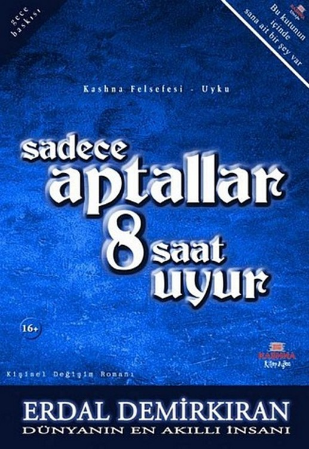

Erdal Demirkıran - Sadece Aptallar 8 Saat Uyur
Sadece Aptallar 8 Saat Uyur
Erdal Demirkıran
Tarama ve düzeltme: hekimhan
Kashna Kitap Ağacı'ndan bir geoe meyresi
CopyrlghtIB2006 Kashna Eğitim Danışmanlık Ltd. Şti
Eserin her hakkı Kashna Eğitim Danışmanlık Ltd. Şti. Çalma uykun
kaçar!'ye aittir.
Bizim Ekip
O Adam : Erdal Demirkıran
Fikir Adamı : Hakan Demirkıran
Baş Muhalif : Cem Vargün
Çizgilere Hükmeden Adam : Murat Uzan
Edebi Danışman : İsrafil Hancı
Manevi Danışman : Burhan Çeçen
Fikri Danışman : Mustafa Demirkıran
Kontrol Mühendisi Ahmet Yaşar Patır
Gözden Geçiren Adam : Yusuf Gedikli
Düzeltici : Yakup Şimşek
Zaman Yöneticisi : Pınar Osman
İç Örgü : Şaban Muslu
Önyargısız Adam : Seyfullah Aydoğdu
Çılgın Tasarımcı : Kemal Çoban
Usta Adamlar : Erkam Matbaası
Ortalığı Fena Dağıtanlar : Yeni Çizgi Dağıtım
ve birkaç muhalif adam
Kitabın ilk baskısı Nisan 2006 tarihinde yapılmıştır
ISBN : 975-6197-06-4
Kashna Eğitim fruufatalık Ltd. Şti.
İstasyon Cad. No! 45/10 Yeşilköy - İstanbul
t 212 575 54 55 f 212 575 54 65
kashna.com kitapagaci@kashna.com
KASHNA Kİ
4
Arama
Kitabın sağ üst köşesinde bulunan kutuda doğduğundan beri sana ait olan bir şey
var. O, o kadar değerli ki onu kırmızı topraktan yapılmış bir sarayda, gümüş bir
tepsiyle sunmak isterdim sana... Eğer günün birinde, kırmızı topraktan yapılmış
bir sarayda, biri, birine gümüş tepsiyle bunu sunarsa, bil ki sunan benim
sunulan da sen.
Hatırlatma» Hipotalamus'un 'Kullanma Kılavuzu' kitabın içinde demiştik ya...
Doğru, içinde; ama onu arama, bırak o seni arasın! Endişe de etme, o
seni
mutlaka bulur...
Kim demiş
* Önsöz okunaaz!'
diye.
İğnenin deliğinden "bir deve geçirdiler. İğne deliği "bildiğimiz iğne deliğiydi; ama devenin 5 hörgücü vardz.
3:
Güneşin doğmasına tam bir saat vardı, fvendyn in sw ratında \J akla zarar
tokat patladığında. \~An çarp-'
mış gibi iırladt yatağından, /atağın ucunda iri yarı ga-'
L f
rip btr adanı gulumsuyordu Kendyn e, Jaçlan çok tuhat''
ti. lıer teli yaydan fırlamak üzere olan bir oka oen i-' yordu, tioisesi,
kaplumbağanın bağasını andırıyordu, Ayaklan /ok, denecek kadar kuçuk,
etleri ise V&-1
aar
önce
denecek kadar büyüktü. !)oyle ki, Kendyn in suratında patlayan
tokat, bu tunar adamın serçe parmağının marifetiydi, lokadm
etkisiyle neye
13
sadece aptallar 3 saat uyur
uğradığını şaşıran Kendyn, kendine geldiğinde korkuyla karışık sordu:
- Dana ne oldu!
- Korkma, önemli bir şey yok' Jaha Cin çarptı sadece!...
dedi koca elli/ yok ayaklı adam. Du cevap ürkütücü olduğu kadar da
kışkırtıcıydı.
- Cin mi? Ne Çin'i?
dedi Kendyn sinir iv şaşkın ve korkak bakışlarla... Sert kabuklu sarıp adam,
küçük ayaklarını bir balerin kadar usta kullanıyor/ kavada adeta bir bıçağın
ucunda döner gibi donuyor, sonra birden duruyor ve tekrar- konuşuyordu:
' Ben Çin'im. Hani var ya, şu Dile tenden ne di-' Ursen cini narı, işte o
benim!
Şaşkındı Kendyn. Cin olduğunu söyleyen o acayip şey, konuşmaya devam etti:
- Şimdi dile benden, ne dilersen. 1 ek kakkın var; ama
öyle bir şey isteyeceksin ki bu, senin asla yapamayacağın bir şey.
olacak!
14-
Kendyn rahatlamıştı. Cunku bu birçok insanın sçaman Saman olmasını beklediği o
mukteşem teklifti; ama biranda butun iyi duyguları yerini, nakli olduğu
iddiasını da barındıran, kırs kokan garip bir tavra bıraktı ve Kendyn, Cin e
şunları söyledi:
- Denim bildiğim kadarıyla böyle durumlarda genelde üç hak verilir.
Şimdi bu haksızlık olmuyor mu?
Cin in bakışı değişti.
- f\z önce yoktum, şimdi varım. Şu anda kayatımn nrsatı karşında
duruyor ve sen benimle pazarlık ediyorsun. f\le acayip bir yaratıksın sen?
Seninle tartışacak değilim. Tek hakkın var. Tekrar ediyorum: tger
isteyeceğin şey senin yapabileceğin türdense kiç oyalama beni, yapmam. Öyle
ev, araba, para lalan istemek yok bilesin.
Kendyn utandı, Cin in bu solleri karşısında makcup bir alacaklı gibi kendini
savundu:
Ama bana da kak ver! Jen geldin, beni uykumun en derin yerinde uyandırdın,
sonra da onu isteme, bunu isteme... diye bir yığın sınır koydun!
na ne
der gibi bir tavırla:
15
sadece aptallar 8 saat
uyur
uyanış
•" Sen bilirsin. Oidiyorum o saman!
Kendyn son anda oltadan kurtulmak ü ere olan balığa oakan balıkçı kadar
tedirgindi, /erinden lırladı:
' LJut dur dur... Bu benim için çok büyük bir fırsat. Kaiam karıştı.
Dira? düşünmeme için ver lütten!
diyerek usta bir insan manevrası yaptt. Dunun ürerine
Oin geri dondu...
Kendyn düşünürken Oin de insanın doymazlığını ve hep dana ra iasını isterken ki
utanmazlığım düşünüyor--du... Kendyn sesli düşünmeyi tercin etti. /vmacı Oin in
ağcından lal almak ve Kata yapmamaktı.
.. •' tv olma?, araba olmaz, para olmaç... Ouç desem, eminim, o da
oımai;. İNe istesem acaba:,..
Oin ipucu verme tararları değildi; ama sanki yuayıüar' dır içinde biriktirdiği
bir sıkıntısı vardı da bu sıkıntısı' .ikan ilk insanla paylaşmayı
bekliyordu.
Ji inle her karşılaştığımda aynı şeyleri istiyorsunuz
Hep çok paranız olsun istiyorsunuz uu kadar paray
T 9* f I ! î
ne Y&p&c&MSîUİ dediğimde de cevap veremiyorsunuz
ideali yok! $imdi İOO milyon aolanr
nı önüne
olsa ne yapardın s diye sorsam, eminim, cevap vere-" mensin. Buna rağmen para
aklınıza gelen ilk şey oluyor her sererinde...
Rendyn maddi bir şey istememesi gerektiğini anlamıştı... Daba yadigarı kurmalı
saatinin yular önce kaybolmuş anaiıtarmı bulmuş gibi bir sevinçle sesini
yükseltti:
* Duldum... Ömrümü u at! ,
Oin niç vakit kaybetmeden sordu Kendyn e: ' bana bir omur dana versem
yeter mi?
/Vlavi çizgili pijamasıyla yerinden fırlayan Kendyn'in sevinci görülmeye
değerdi doğrusu:
< Tabi ki yeter! Fa la bile gelir! dedi. Oin yer değiştirdi odanın
içinde ve sordu:
" umin misini iVendyn iaçlastyla emindi.
" Uvet, elbette...
Oin koca elinin işaret parmağını kaşımak için sırtına uzatırken, Uygunum
demeye hasırlanıyor gibiydi.
16
17
sadece aptallar S saat uyur
- Ucunum! Hakkını kaybettin, /anlış hatırlamıyorsam, Senin
yapamayacagm bir şey fete! demiştim.
dedi. Neye uğradığını şaşırmıştı rvendyn.
•" Bir dakika yaku! Bu benim kesinlikle yapamayacağım bir şey. /Vnlamadm galiba,
ornrûmu uzatmandan baksediyorum!
dedi. Cirv akşam yemeğinden sonra kalıvesini yudumlamak u?ere koltuğa kurulmuş,
çevk yapmaya hasırlanan bir adam kadar rahattı, borcıu:
- f\aç yaşındasın i
- 3o
dedi rvendyn.
- Yani 5
dîye düzeltti Cin. Bakaltm ikinci sonsmoa nasıl %irv&" [ayacaksın? diye dûşûnur gibi karasını salladı ve ikinci soruya geçti:
- insanlar ortalama kaç yıl yaşjyorî
uyanıp
dedi fvendyn. '
- Yani İO
diye düzeltti C-in. Kendyn bir matematik öğretmeninin öğrencisine çıkıştığı
gibi çıkıştı Çin'e.
- Jen nasıl Cinsin. Sağır mısın yoksa; 3o diyorum 5.
diyorsun, ÖO diyorum İO diyorsun...
Lnn, öğretmeninden yediği açara aldırış etmeyen asi bir öğrencinin Benim sana
intiyaam yok! ifadesini yû unde toplayarak, kelimeleri e e eçe Kendyn e bir
teklifte bulundu:
, - Vyik cıkcık... Sağır raıan değilim, sen kesap bilmiyorsun, istersen
gel beraber kesaplayaltm.
Kendyn haklı olduğuna dair niçbir şupne taşımadan sessizce dinliyordu. Cin
devam etti:
- 15 seneni çocukluğunda geçiriyorsun. irndi sorsam, bir
şey hatırlamaksın, /alan mı?
- Doğru,
aeai Rendyn, bu hesabın nereye gittiğini kestiremeden.
- 15 seneni de gıvır ıvır işlerle geçiriyorsun,
Î8
sadece aptallar 8 saat uyur
diye devam etti Cin. rvendyn Nasıl yani, gıvır işlerden neyi kasdeatyorsuni u
soruyordu/ kafasını 3o derecelik bir açtyla sağa doğru bükerek. Cin kaldığı yer-
den, nem de hızını hiç kesmeden konuşmasını sürdürdü:
- /ani saçma sapan televizyon programlan, sanal alem-
lerde sarip arayışlar, işe yarama? oyunlar, aptal sap-tal diyaloglar, sonuçsun
tartışmaları kasdediyorum. Etti 3O.
- Eee? dedi rVendyn.
- Her gün 8 saatini de uykuda geçiriyorsun, günün üçte biri
yani... Bu da yaşadığın ÖO yılın 2o yılını uykuda geçirdiğin anlamına
gelir. J\% önce ya-şarnadığtn ya da yaşadığını zannettiğin 3o yılına bu £O
yılı da eklersek, eder 5O. î oplam ömrün ÖO yıldı. Düş şimdi ÖO
tan 5O yi, bakalım ne kalıyor!
Cevap vermedi Kendyn. Cin in bir an önce sonuca gel-' meşini bekliyordu. Cin
de sonuca geldi zaten.
- İO... /ani demek istiyorum ki sen topu topu İO - yıl
yaşıyorsun, ÖO yıllık ömründe. 3o a 5, ÖO a İO
uyanış
demem bundandı işte. Demek ki ben sağır değilim, sen hesap
bilmiyorsun.
Cin in söylediklerinin istediği şeyle bağlantısını anlayamamıştı Kendyn.
_, I . J [ I ,////// i
t
iyi de, bunun benim omrumun uzamasıyla ne ilgisi
var:
diye sar bir koylu çocuğu gibi sordu. Cin sanki bu soruyu bekliyormuş
gibi anlatmaya başladı:
- Hemen izah edeyim: imdi sen butun sıradan insanlar gibi yapmayıp, 8 saat
yerine günde 4 saat uyursan, her gün için 4 saat ek z man kaşanmış olursun. Du
da ÖO yıllık ömründen tam İO yıl toplar. O halde ÖO yıl yaşadığını zannederken,
yaşadığın İO yıla, bu İO yılı da eklersen toplamda £O sene yaşamış olursun, /ani
iki insan ömrü kadar... Sen de Zaten benden, iki insan omru yaşamanı sağlamamı
istemiştin! Oordün mü, bu senin yapabileceğin bir şeymiş. Hadi eyvallah!
Ivendyn, kumarda tüm mal varlığım kaybetmiş şansız bir oyuncu gibiydi:
21
sadece aptallar 8 saat uyur
' LAoıur gitme! Den 4 saat uyursam olurum. Z,aten 8 saatte bile %ox
geliyorum kendime,
aeai. V-4n durmadı ve kaybolmak için kendi etraimda rıuıa dönmeye başladı,
fvendyn onun bir açığını yaka1-1 ladigma emin olduğunu hissettiren telaşlı
ses tonuyla:
' LW! dedim. Doyle gidemezsin. Sen hile yaptın.
Verdiğin so u tutmadın. /Anlaşmayı hatırla, böyle-" i m
ît I * I I
diğirn şey Benim yapabileceğim btr şey se dediğimi
yapmayacaktın... Denîm istediğim şeyi ben asla ya-' pamanv ama sen
çekip gidiyorsun.
deyince C in dumanı üstünde durdu ve: . .• . ;,
" Dunu her insan yapabilir... ben de bir insansın!
dedi. Kendyn C-in in geri dönmesiyle kısmen de olsa hederine ulaşmıştı.
' î amam, belki her insan yapabilir; ama so? konusu olan benim. Den yapamıyorum
işte! /ani her insan yürüyebilir; ama iki bacağı olmayan bir insan ne ka-" dar
istese de diğerleri gibi yuruyemeî;. !)imdi sen be-' nim yerime o adamla
karşılaşsaydın ve o adam sana /urumek isüyoruml deseydi. Butun
Insanlartn
uyanıs
bacaktan varda*, /uru baalî mi diyecektin ona? Bu mudur senin adaletin Day
C-in:
Otn evin içinde/ tavanda/ yerde, her yerde dairesel şekil-' ler çimerek adeta
bir topaç gibi donuyordu. J\endyn ise dünyanın en ntşıt pinpon maçtndaymış gibi
imliyordu Oin i. Doyun kaslarınt yakacak kadar hı lt hareket etti'' riyordu
kalasını ve çok iena korkuyordu. Hayatında ilk dela cin görmüştü. Onu çok mu kt
ıraımî acaba diye düşünüyordu. İVim bilir belki de Dtra dan, büyük bir i e-'
laketle karşı karşıya kalabilirdi. Dutun cesaretini toplayıp:
y /eter artık dur,, seni gidi yalancı.' diye bağırdı, İ An durdu:
i\leden bağırıyorsun: u an senin söylediklerini
düşünüyorum. Ben senin gibi salak salak tavana ba
I ! I" " I î-l İ i î 1" " " "
karak. düşünmemi ilareket ederek düşünürüm.
t,n abından korkulacak bir şeyin olmadığını anlaması rahatlatmıştı
İVendyn i; ama onu asıl ilgilendiren t o an söyleyecekleriydi.
in
-1 i Neyse, duşundu:
haklı buldum; ama hic hex
eyse, düşündüm ve seni haklı buldum; ama hiç veslenme, senin düşündüğün
gibi olmayacak! bana
£3
sadece aptallar 8 saat uyur
sadece bunu nasıl yapabileceğini öğreteceğim. Sonra--sı sana kalmış!
Kendyn elinden kayan asırlık vazoyu yere düşmeden, son anda yakalamış gibi
mutluydu. Oin iikrini değiştir-' meden kabul etmesi gerekiyordu:
T ]
* lamam tamam, sen nastl istersen...
Cin, olduğu yzraz tam 247 tur attı. Uurau unaa ise elinde dünyanın en küçük
kavanozu vardı. İçinde /vl*' tın suyudur kemalde! diyeceğin bir sıvı olan bu
kava--nozun kapağını açarak Kendyn e uzattı C-in ve:
" Hadi iç bunu, dedi.
-" Bu ne, neden içiyorum: dedi Kendyn.
;
" Gorünmezlik iksiri! Küçük bir yolculuğa çıkacağız-
Ne olduğunu anlamamıştı. Birden aklına o gün yapma-" sı gereken işler geldi.
Kendyn bir kardiyologdu. /Ayrı-' ca yönetmesi gereken bir nastanesi ve muayene
etmesi gereken hastaları, ödemeleri, laturaları ve dana onlarca
24
uyanış
mazereti vardı. Du kadar işin arasında ona Den \_4n (m! diyen birisi gorünmezlik
tekli' ediyordu; ancak onun bunu yapması, yani yok olması imkansızdı. Oiyc tinin
altına kalasını uzatmasını tekul eden cellada iti-' raz eder gibiydi:
-* / oo, bunu asla yapamam!
" J\endin gibi düşünme K.endyn ve bana bir dana aa sakın mazeret üretme.
dedi C-in. Kendyn C-in in sözünü kesti:
*" Bir dakika! Jen neden bana karşı bu kadar ukala davranıyorsun/ Dana banîp
diye kitap etmelisin bir kere!
C-in in aklından Onlar eskidendi! cümlesinin geçtiği gun gibi
ortadaydı.
x Doğru, hski zaman olsaydı Sahip diye kitap ede bilirdim sana; ama görüyorum ki
sen kendine bile sahip çıkamıyorsun. Kendine saygın yok! Kendini yastığa yorgana
saran, sabahları zorla uyanmaya ça-" lışan, akşamları uyumaktan başka bir iş
yapmayan bir zavallı olmuşsun. Ben 5.226 yaşındayım, neler
25
, ;
sadece aptalla)" 8 saat uyur
gordürn geçirdim! İNeyse, hadi uzatma da iç şunu...
v m m bir bıldıgt vardı, .Sanki gorunmeş olması çok da problem olmayacaktı.
Kencıyn Liderine güvenen dava adamı gibi emin bir iradeyle elini kibarca, \_4n
in çif Kin ellerinde duran o minik kavanoza uzattı.
-' I eki bay haddini Dilme?/ içiyorum o £aman!
dedi ve içti altın suyuna benler o bilinmedi. Uo?u ya-' tagtn çaprazında duran
aynaya ilişti. /avaş yavaş yok oluyordu fVendyn, gorünmeîç oluyordu. Şaşkınlıkla
imledi olanları, yok oluyordu. 1 una! bir duyguydu bu, Dirkaç saniye İçerisinde
pijamaları da dahil olmak ü ere yok oldu rverıciyn.
" i eki ama pijamalarım nastı yok oldu/ . . diye sordu Fvendyn.
v_4n cevap verdi:
' bu odadan çıkıncaya kadar teninle bağlan tut olan ker şey görünme olacak,
dokundukların da... /oir culugumu boyunca bi istemedikten sonra, hiç kimse
bt?i duyama? ve gorernes?. rİı tmtş ışık hıkının yak-' laşık £,5 katma ulaşacak;
ama bu hı tn seninle hiç-' . bir ilgisi yok! Du tamamen benîm
marüetim. /ani
ben yokken sakın kendi kendine denemeler yapma. Unutma ki sen hala bir insansın,
/ani profesyonel'* ce yalan söyleyebilen, kendini ispat etmeye çalışan, sürekli
ukalalık yapan ve her şeyi yanlış bilen o ga-' rip şeysin. Oorunmesş olsan da
tuhai şevklerin yine olacak, borularım sadece bana sor. Du arada ben ya-' ntndan
ayrıldığım anda senin görünmediğin sona erecek, bilesin,
Artık tüm kontrol (_4n deydi. I uhar bir oyuna ben i-' yordu Kendyn in o an
içinde bulunduğu durum. C-in sollerine devam etti:
Senin kadar meraKlı olup da merakını giderdikten sonra elde ettiği bilgiye
karşı yine senin kadar tıka-' la davranan başka bir canlı gösteremezsin. Du yuşx
den asla kimseye ve hiçbir şeye dokunmaya kalk-' ma. Her şzyl berüat
edebilirsin. Du arada yolculu-' gumuç boyunca istesen de uyuyamayacakstn.
lxendyn bu durumdan hoş lanmış ti ve bir an önce ne olacaksa olsundu.
" Hadi bana anlat şimdi. i\lasu olacak bu iş: Ura/ rurn nastl uzayacak1/
Den nasıl &% uyuyacağım: iiu
> . «?
sadece aptallar 8 saat uyur
yolculuk nereye kadar sürecek ve ne zaman bitecek: Vok yaşayayım!
derken ömrümü yollarda mt geçi" receğim yoksa:
diye sordu C in e. lxendyn in söylediklerini hiç duyrna -mış gibi devam
etti Can:
Ve sabırlı olacaksın;
/\kuna kastanede asistanı olarak çalışan sevgilisi /vkes" te geldi.
" /a tamam da bari hastaneye bir ugrasaydık! Oin sinirlendi: '
ıNleden: /etiştirmen gereken bir işin mi var:
diye sordu, i avanın ortasında tekrar dönmeye başladı. Sonra
aynanın yan taralında durdu C-in:
" /a da na ırlaman gereken bir evrak mı var:
ıİer cümlesinden sonra evin diğer bir yerinde hareket-' ler yapan C-
in, ardı ardına soruyordu:
- I ersonel maaşları, ukala toplantılar/ hisse senetleri, ki'' ralar,
taksitler, gu el asistanının dalgalı saçları ya da omrunü hesapsızca
tükettiğin diğer şeyler... /ani
kendi gerçeğinle yüzleşmeni engelleyen bini
erce ay-'
rıntı...
Sehpanın üzerindeki kurabiyelerden birini yerken Ctn'i anlamış gibi
gülûmsûyordu Kendyn. Cin tir an durdu:
' Hem neden sana soruyorum ki sanki? Yürü!
dedi Kendyn e ve bûyuk elleriyle tuttu genç adamı. Dönmeye başladılar ve
kayboldular. Kurabiye o anda oradan geçen bir karıncanın onune duştu; ama
karınca ne gördü Kurabiyeyi ne de duydu.
29
S"
I
Dünyanın Rengini Değiştiren Adam
Oenişce bîr odada buldu kendini/ titriyordu K.endyn. Oda öyle inanılmaydı ki
etrarı incelemek orundaydın. Dana önce ne böyle bir oda görmüş ne de duymuştu.
Büyük olan duvarlardan birinde öyle muhteşem bir rex sim vardı ki bunun resim
olduğuna inanmak neredeyse imkansızdı. Janki tüm duvar aynayla kaplanmış, o an
ürerinde gördüğün ve resim zannettiğin şeyin karşısında duruyor, gördüklerini
yansıtıyordu. L)uvarın bittiği köşe-' de ise kalınca bir halat vardı. Halatın
yukarı ucu ta-' vana kadar ulanıyor ve yukarıda bulunan tomruklardan
33
sadece aptallar 8 saat uyur
dunyantn rengini değiştiren adam
birine saplanıyordu. Kendyn aval aval odayı süperken ayağı bir şeye takıldı. Du,
az önce hayretle imlediği du" vartn bittiği köşede gördüğü halatın yerdeki
uzantısıydı ve bu uzantı odayı tam ortadan çapraş olarak ikiye bol" muştu.
Halatın obur ucu ise karşı duvarın çapraş köşe" sini yalayarak yine tavandaki
başka bir tomruğa sapla" myordu. Neydi acaba, bu halatın odayı iki eşit parça"
ya bölmesinin sırrı: Kendyn öyle büyülenmişti ki bir an için görünme olduğunu
unutmuştu. Usulca C_4n in ku" lağına eğildi ve halatın hikmetini sordu. Kendyn
in ses" si£ olma kaygısı karşısında Oin kahkahayla gülmeye başladı.
" Unuttun galiba. Kimse bi i göreme? ve duyamaî;.
diyerek Kendyn i rahatlattı. Cân burada olup bitenleri Kendyn in anlamaya
çalışmasının daha doğru olduğunu düşünüyordu. Kendyn L in in dediğini yaptı ve
odada" ki ayrıntıları tek tek incelemeye başladı.
Yerde/ Hakntn en ilkel nail oudur herkalael diyece" ğin kadar eski; takat
Keşke kaklar kep Doyle olsayat!
diyeceğin kadar muhteşem bir halı vardı. Malının ü?e" rinde auştk olduğumu o
desen yoktu. Halının, halat taralından çapra? olarak kesilen yerinden resim
bulunan
duvarın taraiına kadar olan bolümü, yağlı boya bir tab" loyu andırıyor, diğer
taran ise geometrik şekillerden ve matematiksel sembollerden oluşuyordu. Kendyn
duvarı iç" lemekten kurtulamıyordu. Hatifçe geri çekildi, sırtıyla bir şeye
çarptı, ani bir rerleksle son anda çarptığı şeyin düş" meşine engel oldu.
(çarptığı şey, üşeri kırmızı bir şalla, sanki Kimse görmesin! diye kapatılmış
olan bir tabloy" du. Odada toplam 8 tane tablo vardı ve bunlardan 5 tanesinin
üçeri aynı şekilde kırmızı ipek şallarla kapa" ttlmış, 3 tanesi ise
açıktaydı...
Kapalı olan tablolardan birinin ürerinden kırmızı ipek şalı kaldırdığında
gollerine inanamadı. Sag alt köşesin" de bulunan imhayı saymazsak tablo
bomboştu. Sonra bü" yük bir merakla tek tek kaldırdı kırmızı şalları tablo"
Urdan. Hepsi aynıydı. Hepsinin sağ alt köşelerinde ay" nı imça vardı. Du odanın
sahibi her kimse bira yara" maç biri olmalıydı ki imhasını resmi yapmadan önce
atı" yordu tablolarına.
Ürerinde ipek şal olmayan açık tablolardan birinin önünde, oturmaya ha ır
kalınca bir kütük duruyordu. Kütüğün ürerinde ise karmakarışık renklerle ve
birbiri" ne karışmış boyalarla bir çocuğun berbat ettiğini düşün" düren bir
palet ve iki tane lırça vardı.
34
i
III
sadece aptallar S saat uyur
Odanın bu bölümünü incelemekten kendini alamadığı için kenüç öteki tararlara
denememişti Kendyn. Öyle büyülenmişti ki kiç bilmediği bir şekirde ki tren
istasyo" nunda, tren bekleyen o adama, birinin gelip elleriyle göçlerini
bağladıktan sonra Bil bakalım ben kitntau di-' ye sürpriç yapan kadını merak
eder gibi yavaşça don--dü Kendyn. Dönerken sol yandaki duvarın bomboş ok au u
ilişti göçüne. Oordüğü bu duvarın da resim yap" mak için kaçırlanmış bir tuval
olduğunu düşündü, /\s" unda kaksıç da değildi. V-ünkü aç önce üçerinde kır-"
rmçı şal bulunan o boş tabloların sağ alt köşesindeki im-" çanın aynısından bir
tane de bu boş duvarda vardı, Bü" yük bir merak ve keyeçanla arkasını döndü.
7\rka du varda karşı duvardakiyle kiç alakası olmayan, odanın bu bölümünde
bulunan kalının desenine bençeyen, için" den çıktlmaç geometrik şekiller ve
matematiksel ifadeler vardı. Sanki biri matematik adına bilinen ya da bilin"
meyen tüm problemleri bu duvarda çoçmüştü.
Duvarın tam önünde sanki daka aç önce bir meşe ağa" çından kesilerek yapılmış
oldukça geniş bir masa vardı. AAeşe kokan masaya dayanmış, üç kişinin rakatça
otu’rabileceği, T)unyantn en ihtişamlı sandalyesi budur ner-' haloe! diye
rakatça iddiaya girebileceğin üçerine oturacak
dûnyamç rengini değiştiren adam
keybeti bekleyen bir sandalye vardı.
Odanın kapısı yoktu. Daka doğrusu kapının olmast ge" reken yer boştu. Dar ve
kemerli bir oyuktu buraya gir" men için gereken boşluk.
Derken içeri uçun sakallı, uçun saçlı, geniş omuçlu, ki" rışık kirli elbiseli,
burnunun duvarında bir tutam kakve" rengi boya olan bir adam girdi. Oeniş
kütüğün üzerin' de duran boya paletini eline aldı ince uçlu rırçayla bir-*
likte. Sağ ayağını, ayakkabısını bağlayacakmış gibi kü" tuğe dayadı. Fırçayı
sert darbelerle boyaya daldırdı ve dakikalarca istediği rengi bulmaya çalıştı.
Kıracak ka" dar sert vuruyordu iırçayı palete, tide ettiği rengi ince uçlu
fırçasıyla dünyanın en ince camından yaratılmış o kıçın yüçüne dokundurur gibi
naçik ve dikkatli bir şe" kilde geçindiriyordu tabloda. Sonra kalın uçlu
rırçasınt alıyor eline ve dakikalarca dövüyordu lırçayla paleti, iti" de ettiği
rengi, kalın fırçanın ucunda biriktiriyor ve can düşmanını öldürüyor gibi
saplıyordu iırçayı tabloya. Kendyn öyle kaptırmıştı ki kendini. / aptnaaaaai di"
ye bağırmasına engel olamadı. Oin oldukça sakin:
" Haklısın; ama korkma, o ne yaptığını biliyor, sen sadece
içle.
36
37
. ; sadece aptallar 8 saat uyur
dedi. Kendyn adamı içlerken içinde kalan bir ukdesini paylaştt C-in le:
' Kabiliyetim olsaydı ben de ressam olmak isterdim, inan bunu çok isterdim; ama
maalesei bu bir yete-' nek meselesi...
Cin birkaç saniye Kendyn in yüçüne baktı. Bakış an--lamsıçdı. Kendyn susması
gerektiğini düşünerek sustu ve ressamı imlemeye devam etti.
Saatlerce boyadı adam. Sanki dünyanın rengini degişti' riyordu. Hata yapsa
kıyamet kopacaktı sanki. Du ara-* da gün, çikolata yediği anlaşılmasın diye
gizlice agçını silen bir çocuk gibi usul usul nöbetini geceye devretme-' ye
nasırlanıyordu.
Adam gaç lambastm yaktı. Kira? dana çalıştıktan son-' ra odadan dışarı çıktı.
Kısa bir çaman sonra geri don' du. Burnundaki kahverengi boya silinmişti. Du
sefer ha' latm karşı taralına geçti. AAasanın ürerinde bulunan kalemlerden
birini alıp duvara yakmaya başladı, i um duvar doluydu. Nerede boşluk vardı da
bu adam ha' len yasıyordu. T)oldu dolacak! tedirginliğini yaşama' rnak elde
değildi. İnce ince yaçıyordu adam. Sonra ttîm neybetiyle dünyanın en
ihtişamlı sandalyesine oturdu.
38
dünyanın rengini değiştiren adam
Kapağı oyma ağaçtan yapılmış gibi duran kalın defte' rini açtı ve duvara uçun
uçun bakarak notlar aldı bu deitere. Saatler sonra kalemini bırakıp yerinden
kalktı adam ve gaç lambasının ayarını dûşurup dışarı çıktı.
' 1 Nereye gidiyor: dedi Kendyn adamın peşinden bakarak.
' Uyumaya... dedi Oin ve devam etti:
' Du adam her dört saatte bir olmak üçere toplam yarım saat uyur, sonra saat
lalan kurmadan ya da uyandırılmaya ihtiyaç duymadan, çamanı gelince uyanır ve
işinin başına geri döner. Z,aten biç bura' ya geleli de neredeyse dört saat
oldu.
dedi L-in. Kendyn in göçlerine ve soçlerine hayret bu' laşmıştı.
' inanılır gibi değil!
' Kim olduğunu söyleyince eminim inanacaksın.
dedi v in. İVendyn in merakı son duçlugû de geçen ve bir adım daha atsa tam
ortadan çatlayacakmış gibi olan bir Ingiliç I ayı na bençiyordu.
39
sad
ece apta
llar 8
saat uyur
I ı'i
' Bu adam L)a Vinci. Leonardo L)a Vinci. Ressam, matematikçi, iiçikçi, tiloçor
ve dana bir çok şey olan o ersane adam. inandın mt şimdi/
-/Anlamalıydım; ama inan ben de böyle çalışsam/ ben de 13a Vinci olurdum,
diye ağcından kaçırdı İVendyn, C-in in vereceği cevabı niç düşünmeden.
fc., çalış o çaman!
diye çok basit bir cevap verdi \_an. rvendyn, Oin e ilk deia 3.957 duysu ve
anlam içeren o bakışını savurdu, tvet, nayır, nasıl, neden olmasın, naklisin,
acaba, san' ki, 3aliba, başarabilir miyim, kesin yaparım, elbette, hiç-' bir
sjaman, tabi ki ve burada adını sayamayacağım, \yf nim de bilmediğim yüklerce
başka şey vardı bakışta.
Du adam L)a Vinci ydi işte ve böyle olunuyordu L)a Vinci. Sen sadece
çalışıyordun. İçindeki Ua Vinci ligin kabarıyor, eisane oluyordun, /a da
çalışmıyor, içindeki L)a Vinci yi gömüyor, pursane oluyordun.
O&aatin <£Pcadı
4O
a- 2.
3
a-
ti"
p—
a-1
9
g- 3
& 3
cr-
C ET.
û_
5""" £""" O
a_
er-
sadece aptallar 8 saat uytn
\
sessizce çalışıyordu. Oda sessizdi. Kendyn sessizdi. Cin sessizdi... Diraz
sonra Kendyn dayanamadı ve sordu:
' Kim bu?
Oin kuçuk bir bastonu andıran işaret parmağını dudak-' larına götürerek ju$
anlamına gelen o malum işareti yaptı, Kendyn sustu ve adamı imledi. /\dam masada
bu-' lunan dünya maketine benzeyen şeye bakıyordu. Sade-' ce bakıyordu. Aradan
E, tamam yeter artiK, ou kadar oa olma?! diyeceğin, katta sinirlenebileceğin bir
zaman geçti. Kendyn dayanamadı ve tekrar bozdu sessizliği:
' Kim bu?
C-in, asker arkadaşını anlatmaya nasırlanır gibi yaklaş--ti Kendyn e.
•* Du mu kim? O bir insan!
dedi. Kendyn beklediği cevabı alamadığı için bira? ger-' gin; takat alaycı bir
üslup içerisindeydi:
O/, /t
'... .: .
nu görüyorum.
Oin ciddiydi. Sanki vermek istediği sitemli bir mesaj vardı.
' Demek ki anladın! O halde bu da senin gibi bir - insan
olduğuna göre biramdan uyuması lazım değil mi i
çalar saatin icaöı *
dedi ve elini cebe benzeyen o ilginç yere soktu, buyuk bir kum saati çıkardı ve
yere koydu:
' Du, tam 3o saatlik, bakalım ne zaman uyuyacak bu adam; ... ,..
,. , ,,.-. • . .- ... . . >••;;': : '.
dedi. ' '"• " - :i-"-
'i: - ' ' ; "
Saat ilerliyordu. .Adam donmuş gibi bakıyordu masasın'' daki dünya maketine. Dir
ara iNlnayet dedirterek ye-7 rinden kalktı ve gezinmeye başladı adam. Odanın bir
ucundan diğer ucuna hiç durmadan yüzlerce kez yûru-' dû. jonra üzerindeki ceketi
çıkarıp koltuğunun arkasına astı ve oturdu. AAasamn üzerindeki ilkel dünya make-
' tinden arta kalan yere ancak sığabilen deiterine divit-' le bir şeyler yazmaya
başladı, /vralıkstz yazıyordu. Kendyn izlemekten yoruldu... Adam yerde duran kıP
çuk metal parçasını eline alarak koltukta olduğu gibi uyudu. Derken elindeki
metal parçası yere duştu. Du sesle uyandı ve tekrar yazmaya başladı...
*" v iadi olamazsın!
dedi Kendyn, yerde duran metal parçasına bakarak, v in gururlu bir
tebessümle:
' Cvet, bu sana ve akrabalarına benzeyen adamın
44
sadece aptallar 8 saat uyur
rar
.mın
uykusu bu kadar işte. Uykusu 5elince onu tek alıp olduğu yerde
uyuyakalacak.
Sonra sustular ve imlediler. Uyku, bu gizemli ada gollerinde
İNiagara olup akınca, eğilip metal parçasını alıyor ve olduğu yerde
kıvrılıyordu...
Oin sanki yarım kalan cümlesini tamamlamak orun-* daymış gibi devam etti:
' Ve aradan yıllar geçecek, bi bu adama donup İNevvlon
diyeceği , Isaac iNevvton.
Jonra kum saatini göstererek: " Bak,
dedi. i\um bitmek üzereydi ve bûyuk lişikçi Isaac lNevv ton topu topu 5 deia
düşürmüştü 15 dakika ayarlı bir çalar saat gibi kullandığı o metali
elinden.
dördüncü (SBâlüm
:\&y-.j
M:
çğünde
O&aat
46
Mavi Sevgiliyle GunJc iki Saat
Büyükçe bir odanın tam ortastndaydıUr. Ortalık dar" madagındı. LJç uca eklenmiş
3 yemek masası buyuklû" günde bir çalışma masası vardı odada. Üçeri elektronik
devrelerle, kablolarla ve çoğu insana 3ore gereksin ay nnhlarla doluydu. Hiç el
değmemiş, çok ojenle na?tr" lanmış bir bey solrası, gumtiş bir yemek tepsisine
sıgaf nlmış ve masanın ürerinde bulunan, içinde ga? yağı olan kirli bir
tenekenin yanına konulmuştu. Öyle bir sorra, tenekenin yanına hiç yakışmıyordu.
O solra kesinlikle Henu$ acıkmadım, diyen birinin onu itmesiyle teneke" ye
yaklaşmıştı. AAasaya u ak bir köşede alelade 4"5
49
L
I I
sad
Icce apta
,11ar 8
&aat uyur
san
dalye, Tunların burada ne *şl vart dedirterek lalet" tayin bir şekilde odaya
serpiştirilmişti. Duvarda, olması gerekenden dana taçla gaç lambası vardı.
Hepsi yanı"
yordu ve devrin en ışıklı mekant burası diye duşundu"
J ruyordu.
Kendyn etran incelerken, Oin de Kendyn i imliyordu. Ctratta hiç kimse yoktu.
Kalın bir testere sesi geliyordu sanki gaipten. Jesin geldiği taralta ki aralık
kapı çarp" ti gollerine. Kapıya yaklaştıkça ses artıyordu. İçeri gir" diler ve sesi buldular. AAavi bir battaniyenin altında gamsın tasası? bir adam
Korlaya norlaya uyuyordu.
" /anltş yere geldik galiba!
dedi Kendyn, sanki Oin in bir açığını yakalamış gibiy di y'nz, iladesi. Cân
hatırlattı:
" Sabırlı olacaktın!
...beklediler. Kiramdan adam uyandı, /vklına ödemesi gereken hacimli bir borç
gelmiş gibi yan odaya itrladı. AAasamn başına dikildi ve çalışmaya başladı. f\%
önce uyuyan adam o değildi sanki. Uykudan Kalktın oe adam a$ yavaş ol!
dedirtiyordu. A4asanm u erindekile'' ri birbirine sürterek bir şeyler yapmaya
çalışıyordu... Unu onun ucuna ekliyor, bunu başka bir şeye dokunduruyor
5o
mavi sevgiliyle juı
tıdz
ve ba en duruyor, niç kıpırdamıyor sadece isliyordu; ama araltksı? çalışıyordu.
" Bu kim A.lıan aşkına deli talan mı?
diye sordu Nendyn Oin e. C_/in cevap vermeden Kendyn
cevaplandırdı: ' Du bir insan.
Oin karasını salladı ve Kendyn den nabersi hasırladı-' ğı kum saatini
gösterdi. ' Bu 6 saatlik,
'
dedi. /\dam çalışırken Oin le iVendyn sonbet ederek i?" liyordu olanları. Dira
sonra, ne oldu bilinme?, adam ner şeyi bırakıp yan odaya gitti. Kum saatine
baktılar. Hc" nus 3 saat olmuştu adam çalışmaya başlayalı. Odaya gi" rer girme?
tekrar mavi battaniyesinin altına girdi ve no" rul horul uyumaya başladı. Oin: "
Oordun tnû, yine uyudu seninki!
dedi. Beklediler 15 dakika sonra tekrar uyandı ve san" ki hacimli borcunu
natırlamış gibi tekrar fırladı yatak" tan. ""Biliyorum, bu cümleyi daha önce de kurmuştum; ama adam her seterinde böyle uyanıyorsa ben ne ya" pabilirim ki:~* ve
tekrar çalışma odasındaki masanın ba" sına dikildi deli.
V ,/.
,. 51
İ!
Ik
sadece aptallar 8 saat uyur
Biramdan İçeriye bir kadın girdi ve masanın ürerinde ow lunan tepsinin 15--2O
crn ufağına yeni bir tepsi koydu. L,skisini aldı ve geldiği kapıya doğru
yöneldi. Bir iki adım atttktan sonra. Adama Öleceksin, artık yeteri demek
istediği halde kırılmasın diye bunu söyleyemediği belli olan mimiklerini
şifleyerek:
*" Hadi, bira? ara ver de yemek ye!
dedi. Adam hiç cevap vermedi. ı\adın, çocuğunu düşü" ren bir annenin hüznüyle
ayrıldı odadan. Ixadın da go runmeç miydi acaba ki adam klç cevap vermedi. Dunu
Oin e sordu Kendyn. ,
' Hayır dedi Oin.
Onlar konuşurken adam, bir bey sofrasını ürerinde ta-' şıyan gümüş tepsiyi
eski tepsinin yerine iteledi.
" Kadın görünüyor elbette; ama o öyle kilitlenmiş ki hederine, go ü niçbir
şey görmüyor,
diye sürdürdü cümlesini Oin; ama belli ki dana soylc yecek çok şeyi vardı:
" Du adam ner üç saatte bir 15 dakika uyuyarak ya' . şadt hayatını, /ani
günde toplam iki saat uyuya-'
mavi «vjtuyle günde (ki saat
rak. Ve aradan biras; saman geçecek, biç bu adam" dan tdison diye bahsedeceği .
Dünyayı aydınlatan, uyumayı ve yemek yemeyi kir türlü beceremeyen bu' yük dahi.
Kendyn, mumu, ga? lambasını, lüksü... Lir gece vakti kaldırıp tarihe gömen adamı
görmüş kadar şaşkındı. Bu arada cdison yine her şeyi bıraktı ve tekrar mavi sev
guisine sarılarak uykuya daldı.
' -53-
"musun <&cindeki AJam
j
Kuçuk Fanusun içindeki Bûyuk Adam
/Mtlı üstlü 2O yataklı bir yerdeydiler. Yatakhane gibi bir yer... Ortada volta
atan adamları görünce anladı-' lar. Durası bir hapishaneydi. Kançadakilerin
uyuduğu, uyanık olanların volta sırası bektedigi o yerdi burası.
' Şunları bir İmleyelim,
dedi rvendyn, cümlesi bitmeden, hapşırığı yu unde don-" muş gibi bîr surat
belirdi kovuşun demir kapısının onun-' de. rİayatı boyunca hiç gülmeyen bir
adamın ciddiye-' tiyle:
.....
|! l! II ıİ'Iı'ıJiı
i
57
sadece aptallar 8 saAl uyur
-- Öğlen yemeğuii...
diye bağırdı. Herkes uyandı. Biri hariç hepsi yemeğe gitti...
Koca kovuşta bir başına kalan adam önündeki buruşuk deftere bir şeyler
karalıyordu. Z aman sjaman arka say lalara seçip birtakım kontroller yapıyor
sonra tekrar kaldığı yerden devam ediyordu. Ba en tebessüm ediyor ba en hu
umeniyor, basen ağlamaklı oluyor, baçen de içini çekiyordu yakarken. Duyguları
ne anlama geliyor bilinmeydi; ama yandıkları kesin önemli şeylerdi. Kale'mi
önündeki deftere dokundururken dünyanın en buyuk ordusunu yöneten bir komutanın
bakışına dönüşüyordu bakışları. O ordusunu yönetirken, diğerleri dondti ye-'
inekten ve randadaki yerlerine geçtiler.
İki kişi mektup yakmak için sehpasının ucuna yaklaştı., biri ise goçunû hiç
kırpmadan elinde sıkıca tuttuğu, bir ki? çocuğunun resmine bakıyordu. İki kişi
de sanki m?-' lı yürüyünce bir şeylerden intikam aldıklarına inanarak volta
atıyordu. Duracakları ya da geri dönecekleri yeri gormesen hasta babasına kan
yetiştirmek için koşan ha-' ytrh evlat gorunumundeydiler. Oeriye kalanlar ise
ran?a-' larında yatma düdeni alıp uyumaya başlamıştı. 1 urdikkat
58
kuçuk (İanusun içindeki buyuk adam'
olanları imleyen Nendyn in saman kaybetmesine engel olmak ister bir yaklaşımla
ve aceleci bir tavırla konuş--maya başladı Oin:
' Bu uyuyanları seyretmene gerek yok! Onlar sadece yemek yeme yamaman uyanır,
geri kalan yamanlar-' da ise uyurlar. Bu şekilde cz.%a surelerinin daha hıŞ'-lı
dolduğuna inanırlar. Uyanık oldukları anlarda özgürlüklerine kavuşunca hiç
uyumamaya falan ye-1 min ederler; ama hiçbir i;aman bilmekler ya da belirler de
anlamaklar ki içeride ya da dışarıda olmak arasında hiçbir fark yoktur. Vunkû
her insan ha-' yatını bir ianusun içinde yaşamak orundadır. La' nusu buyu tense
sadece beyinlerdir ki insanın sığdığı her fanusa beyni de mutlaka sığar.
Dikkat donmuş gibiydi Kendyn in suratında. Şaşkındı. Oin in bilgeliği onu
büyûluyordu. Sanki her şeyi biliyor--du, sanki butun fakültelerin toplamı gibi
bir şeydi Oin. v-4n devam etti:
"" tğer gideceğin yerin bir sınırı varsa, eğer yapacak--larımn bir sınırı varsa, eğer bir gun mutlaka bir son--la onun kesiliyorsa... Sen omrun boyunca daima bir
ianusun içindesin demektir. Du durumda rahatlıkla
59
sadece aptallar 8 saat
insan dit ianusun içinde kep oir taçlan tçin yaşar.1
diyebiliri?. Aindanda ya da kirvede olması niç rark' it değil yani. O Kaide
nerede olursa olsun, nasıl olursa olsun, daima yapabileceğinin en iyisini
yapmalı insan.
«• /Anlıyorum/ dedi Kendyn. Oin, yaçan adama sırtını dönerek:
" Bu ianusun içinden biri kendini diğerlerinin bir taç-" lasına dönüştürüyor
şimdi. /Aradan yıllar geçecek ve birileri onun gibi olmak isteyecekler; çünkü o
daima birilerinin bir racası olacak. Dunu bildiği için işta' nı yok onun, bunu
bildiği için uykusunu randasına mankum etmiş ve bunu bildiği için o, sâdece bir
ke-' re mahpus.
Nendyn ayak parmaklarının ucuna basarak yükseldi ve gollerini (_4n in sol
omzunun ürerinden sarkıtarak ya' çan adama baktı. (_4n:
" Dikkatli bak! Onu tanıyorsun. O senin de bir tablan!
dedi... K.endyn adamı tanıdı. Onu tanımayan mı var-' di dünyada/ Ooçleri bir la
la bakan adam Uostoyevs'' ki'ydi tabii ki!
AJttna ÖSâlüm
Kimdi Acaoa O Taşı O Kuyuya .Atan Salak
İVaranlıgın çiiir olduğu yamandı. Oin bir deniş kena rina götürdü
J\endyn i. Uiuk çizgisini göstererek: y imdi ner şeyi unut ve sadece
içle.
dedi. Dirkaç dakika sonra naiil bir kırmızılık belirdi ufukta.
" İ)ak güneş uyanıyor, kainattaki en büyük işi gürültü-' &ü% patırtısı ve hiç
şımarmadan sessizce yapıyor, /ap-' tığı işin büyüklüğünü Ouneş Oogdu dan başka
ntç-' bir kelime karşılayamıyor. .Düşünsene, a% sonra nava aydınlanacak,
kuşlar ötmeye başlayacak, karıncalar
sadece aptallar 8 saat uyuı
kimdi acaba o taşı o kuyuya atan salak
yuvalarından çıkacaklar... /Ağaçlar bile çalışmaya başlayacak. / eryüzü,
üzerindeki siyak yorganını kal' dırıp aya ve yıldızlara savurarak cezalandırır
gibi söndürecek onları... Ve yü? milyonlarca yıldızın top' lantp yapamadığını
güneş tek başına yapacak,
diyerek kainata olan kayranlığtm irade etti Oin.
" Hiç duşundun mü? Neden bitkiler gündü? oksijen, gece karbondioksit üretirler:
" Hayır.
dedi. Hiç düşünmemişti. Oereksi? işlere zaman ayırmak' tan itrsat bulamıyordu
ki düşünsün. Oin devam etti:
-" vünkü güneş nayatın başladığı andır. /Ağaç, ağaç iken/ o Dile teslim olmuştur
güneşe. Düşün kele, c doğar dogma? bütün bir sistem nasıl alt üst olur; Du kadar
büyük bir dönüşüm nasıl gerçekleşiri Ve gû-" neş nasıl bir güçtür ki doğmasıyla
birlikte bütün canlılar karekete geçer. Oel, şimdi gidip bakalım güneşe rağmen
uyuyan bir canlı var mı dünyada;
Bu arada güneş yine ker zamanki gibi ağrısı?/ sancısı?/ çığlıksı? doğmuştu. Oin
ve Kendyn, bir soluk auşlık %&' ıda güneşe teslim olan bütün alemi gezdiler.
/Aslan/
ma ne
kaplan, kurt/ kuş, aygır, beygir, fare, fil, sinek, böcek/ elma, armut, ispinoz,
balina ve ker ne varsa nefes alan almayan çoktaaan uyanmıştı.
-" imdi de senin akrabalarını gezelim/ bakalım orada neler oluyor:
dedi C-in insanlık alemini kasdederek. Dinlerce eve gir-' diler. Kendyn in
akrabalarının %9O ı uyuyordu. Uya-' nık olanların ise büyük bir çoğunluğu ya
çocuktu ya da Zorla uyanmıştı, mecbur olduğu için. Kendiliğinden ve isteyerek
uyanabilen o kadar a? insan vardı ki Oin in yanında ilk defa utanmıştı Kendyn.
Hayvanlar ve bit'' kiler alemi/ kurmalı saatlere iktiyaç duymadan eksiksi?
uyanabiliyordu da dünyanın tek akıllısı kabul edilen in-' san kalen mışıl
mışıl uyuyordu.
" man çok utanıyorum,
dedi. Oüneş doğduğu, gün ışıdığı için yanaklarından sarkan kırmı?ıyı sak la
yamıyordu Kendyn. Uin, bakışına a ı gülümsemesini de katarak:
" Dur, bu bir şey değil... Oüneş doğalı daka yarım saat oldu. Bakalım tamamen
uyanmaları kaç saat sürecek:
deai. Her saniye bir eve girip çıkarak sürdürüyorlardı
64
65
sadece aptallar S saat uyur
kimdi acaba o taşı o kuyuya atan salak
gezintiyi. Büyük bir yorgunluğun ardından uyuma ödülü kapanmış ve İO dakika önce
yatağa girerek Kak et--tiği ödülün tadını çıkarıyormuşçasına raKattı
insanlar.
Tekrar Kayvanat ve nebatat alemini geddiler. Uyanmak şöyle dursun Kemen Kemen
Kepsi yavrusunu doyurmuştu Dile. Oeri döndüler. İnsan Kalen uyuyordu. /Vlevsim
yaçdı. Oüneş doğalı tam 2 saat olmuştu. Dir açıklama bulamıyordu Kendyn.
Gördükleri karşısında sadece uV gün olduğunu soyleyebiliyordu: çgunum!
Kendyn sıcak yatağında güneşi Kiçe sayarak uyuyan Ker bir insanın yerine kendini
koyunca bu vaKim tablo da-Ka da kararıyor, utanç daKa da kıvrıyordu...
- 1 eki neden böyle:
diye sordu ıVendyn. Cin elinden tuttu I\endyn in ve önüne gelen Ker evin yatak
odasına girerek, işaret par'' mağım uyuyan insanlara çevirip, Ker biri için
değişik bir uyku sebebi söyledi.
- v ünku olumsun olduğunu zannediyor... Çünkü akıllı
i i i,, ,r „ r~,, i „ i n" \ " \
olduğunu düşünüyor... yunku kaçıyor... \xmku ken-
1 1 H" \ " " " W
- dine saygısı yok... vunku o gur olduğunu sanıyor...
Ç" T" I" e» \" i î r*„ t n
unku nankör... \,\\x\Y.u acayip tembel... Vunku
verdiği soçü tutmuyor... Çünkü çaman bitmeyecek sanıyor... Çünkü işe
yarama? olduğuna inanıyor...
Ç" \ " " I C*» T» T I f
unku önyargılı... \Âmku aptal/ aptal/ aptal...
Sonra durdular. SaKilde güneşe baktıkları yerdeydiler. Cin gollerini
Kendyn e dikti: /
- Çünkü dostum Kaçır bir sistemin kucağında doğdu, , doğdun... Sordun sormadın.
Sana fcjişkin oir insan 8 saat uyutnaltcur! dediler, inandın. Araştırdıklarını
söylediler, iyice inandın. Hiç düşünmedin, /a yanlışsa! demedin hiçi Kimdi acaba
o taşı o kw yuya atan salakf Bunlarla asla ilgilenmedin; çünkü işine gelen
buydu. Uyumak çok keyifliydi. Ne borcunu hatırlıyordun, ne de kötü giden
işlerini... Ne babanın kalp problemi geliyordu aklına ne de annenin ağrıyan
dikleri ve ne de çocuğunun eksik olan lego taşı. Uyumak, kaçmaktı senin için. Ne
de gü-2el oluyordu güneş batınca!
v in bunları anlatırken, Kendyn neres almadan dinliyordu... Cin in
susacağı yoktu:
- Uyku seni öyle bir esir aldı ki akşam olunca engel olamadın göçlerinin
kapanmasına. Aslında engel
66
61
-;!,' sadece aptallar 8 saat uyur
olup olmamanla da 113in yoktu; çünkü sen uyku kakkında hiçbir şeyi merak
etmedin. Böylece bir muhteşemi. Dilmediğin bir katile dönüştürdün.
" Bir dakika, diye kesti Kendyn, Otn in solünü ve devam etti:
' Du anlatttklartndan benim anladığım şey: Jen hariç bütün dünya yanılıyor] i
eki 6 milyar insan nasıl olur da aynı yanılgıya ortak olur:
İki kolunu iki yana açtı Cnn. lam olarak emin oldu-' gu yükünden
belliydi.
x t-vet, kesinlikle bütün dünya yanılıyor. Hem de he-' men hemen her konuda,
/ani kuyuda tek taş yok! Binlerce taş var. /üçlerce de kuyu... 15 saniyede İS''
pat edebilirim bunu.
Kendyn meraklı gollerle imliyordu. Oin, kuma bir daire çizdi serçe
parmağıyla. 1 am tepeye 1£ yazdı ve sordu:
" Kolundaki saat buna benziyor mu;
Koluna baktı Kendyn. Kolunda saat yoktu; ama saati o yerdeki daireye
benziyordu.
" Evet.
içimdi acaba o taşı o kuyuya atan salak
'
dedi. Sorusunu pekiştirmek için bir soru daha sordu Oin: ' 1 eki hastanenin
duvarındaki saat buna benziyor mu; ' Evet, tabi Ici... dedi Kendyn, hiç
düşünmeden. -* Dıitün dünya aynı saati kullanıyor değil mi; fcvet anlamında
kalasını salladı Kendyn.
" /ani hepsinde 12, tam tepede ve bütün saatler ge-' ce 1£ yi gösterince bir şey
oluyor, o gün sona eri-' yor ve yeni bir gün başlıyor, değil mi:
Bunun da cevabı tvet ti. Oin bütün dünyanın duyma-' sı gereken u?un bir
cümle kurdu:
1 eki bu nasıl bir akıl ki yeni gün gecenin tam ortax sında başlıyor/ Du nasıl
bir takvim ki çimi karanlık-' ta gün donuyor. Oüneş saat O da doğarken, gecenin
saat l£ sine sıfır demekle ne yapmış oluyorsunuz:
k. Sağlam sessi ıtK.
Halbuki güneş doğarken gün başlayacaktı. İlla bu tasarımı kullanacaksan saatin
6 olduğu noktayı gü'' nün başlama zamanı kabul ederek, sılır sayacaktın. 9
dediğin yere de 3 diyecektin... Böylece saat 9 da
69
Sâdece aptallar 8 saat uyur
kimde acaba o taşı o kuyuya atan salak
,.., uyanan adam, güneş doğalı, gün başlayalı 3 saat ol-muş diyecek ve günü
kaçırma endişesiyle yerinden iırlayacaktı.
Kendyn elindeki sağlam delillerle itirafa hasırlanan bir
avukat gibiycıi:
- Ama olur mu hiç öyle, güneş ker zaman 6 da dog-
ma? ki!
- Tamam işte, ö'da doğmadtğı yamanlar için saten sen
ilerileri saat uy5ulamast diye bir şey icat etmedin mi? Al saati
bir saati ileri ya da seri, güneş yine sıfırda doğsun. Düşündü Kendyn.
Cin Kaleliydi.
- Haklısın!
- Bunları nakli olmak için söylememiştim. Ayrıca hak'
lı olmaktan nefret ediyorum. naklisin! Haklıyım da ne oldu? Benim nakli olmam
sana ne kattı! Yanlışı düzeltemediğin surece benim haklı olmamın kime ne
faydası var:
- Haklısın...
Oûlüştûler. Sonra Cin kaldığı yerden devam etti:
- -Ben şimdi sana saatin şeklini değiştir, üstüne dantelli
örtüler ort ya da çiçeklerle süsle talan demiyorum. Bırak yine öyle kalsın; ama
hiç olmazsa insanları güneşle uyandırabilmen için biraz dana cömert dav ran.
Dır iormul duşunJ
Kendyn anlamamıştı son iki cümleyi: - Oomert mi, nasıl yani!
h-vet cömert. İNeden paradan 6 sıiır atmaya cesare'' tin var da saati 4
saat ileri almaya cesaretin yok:
i embelsin kabul et. Oo un kesmiyor. Düşün, yarın sabahtan itibaren saati 4
saat ileri aldığını düşün!
Düşündü Kendyn. İena fikir değildi bu. Cin sordu:
* bence insanlar buna ayak uydurmakta zorlanırlar mıydı!
" Hayır, değişen hiçbir şey olmamdı; çünkü gün yine £4 saat
olacaktı...
dedi Kendyn ve heyecanlandı.
1 eki o saman seni engelleyen ne! Düşün, bunu yaptığını düşün! İnsanları erken
kaldırman belki büyük bir organizasyon ister. Bütün insanları
güneşle
7p
tf
«âclece aptallar 8 saat uyur
kaldırman için milyonlarca hatta yüz milyonlarca/ saat eğitimler yapman lazım;
ama sadece saatin aya'' rıyla oynayarak, Kem de hiç masrai etmeden butun
insanları bu buyuk yanılgıdan kurtarabilirsin. BoyU'-ce ne onlar ne de sen
hiçbir şey yapmadan tum tembelliğinizle birlikte yine 9 da uyanmanıza rağmen
güneş, yeni doğuyor olur.
i\endyn in aklına yatmtştı bu iikir. itele de az önce en son uyanan canlının
insan olduğunu görünce... O heyecanla:
Kesinlikle muhteşem bir fikir! Hiçbir şeye gerek yok, sadece saati ileri
alacaksın, dünyanın kaderi değişe-' cek. Vay bee... Sen harikasın Oin,
dedi Kendyn.
-* Sen de en &% benim kadar .harikasın; ama bir fark-" la... Sen düşünmeyi
reddeden harika bir salaksın... Dirazcık duşunsen okullarla, işyerlerini/
fabrikaları, bankaları aynı saatte açıp sonra da irailk neden ou kadar
kalabalutr demezdin?
dedi Oin. Kendyn alışmaya başlamıştı Oin in bu tav rina, bu sebeple ters bir
tepki vermedi sadece gülümsedi.
O edinci (5&âlütn
Q£pumak Of etsepdi
72
Sadece -Aç Uyumak Yetseydi
Dünyayı Karıncalar Yönetirdi
Her bir otun ooyu katasıç bir cetvelle tek tek ölçülmüş
de hesaplanarak ekilmiş gibi mua am görünen, alabil-'
engine büyük bir tarlada yürüyorlardı, insanın içini ay
din Utan bu mukteşem arazide dolaşırken fırtınalar kc
puyordu Kendyn in içinde. Gördükleri ona kaşanan in'
I sanların başarı formülünü öğretmişti: /vş Uyumak...
I Olağanüstü bir şeydi bu. f\z, uyuyordun ve başarıyor''
I dun. Kendyn bu kadar basit bir şeyi yıllardır neden
I yapmadığım düşünerek kayıtlanıyor,, bir an önce bunun
1 nasıl yapılacağını öğrenmek için sabırsızlanıyordu.
7S
sadece aptallar 8 saat uy,
-" Hadi öğret bana, nasıl a.% uyuyabilirim: Den de ba sarmak istiyorum.
dedi Cin e. Cin:
" Dunu öğrenmen o kadar da kolay değil, sabırlı ol Öğreneceksin elbette. Du
yünden buradayım; ama oz-lirtmek ve altını çimmek istiyorum ki butun bı
adamların ortak bir özelliği dana var: Hepsinii başkaları tararından ütopya diye
değerlendirilen bi de neden var ve aslında dana çok hederleri uyutmuyor onları.
l\endyn mutlu olmuştu; çünkü onun da bir Kederi var-
ek
Denim de hederim var! .
' Dak seeennn. ıNeymiş senin hederin bakayım: diyerek aşağıladı rvendyn i.
' /Vlesleğimde yükselmek istiyorum, dedi göğsünü 3ererek. Kendyn hatırı
sayılır bir doktordu.
* ben buna hedei mi diyorsun yoksa:
76
sadece a? uyumak yetseydi dıinyayt karıncalar yonetfrdt
<* Her doktor yükselmek ister; ama ne hikmetse ba f lan ibni bina olur.
dedi ve hayranlıkla INIe adamlar geldi seçti! derken dudağını büken adam gibi
büktü Cin dudağını. Sonra devam etti:
' Her şey git>t hederi de yanlış öğrettiler sana. Fvüçük düşünüyorsun; çünkü çok
uyumayı öğretenler, sana hiç hissettirmeden bir de küçük düşünmeyi öğrettiler.
x Nasıl yani: dedi. Dikkatini püre bağlamıştı Kendyn.
' Bir meslekte yükselmek asla uyku kaçırıcı bir hedei olama?. /\dı üstünde,
heder! Dır heder göstermen la ım yani. yükseleceğin yerin bir adı olmalı. Den
şurayı istiyorum! demelisin yani. A.ksi halde bir hc derin yok demektir. Ve eğer
etkili bir heaeiin yok-' sa a% uyumanın da bir anlamı yoktur. Hatta rnüıtr'
künse git uyu ve bünyen kaldırıyorsa hiç uyanma; çünkü hederi olmayan bir
insanın uyanık olması hem kendi için hem de insanlık için bir işkencedir,
[dedikten sonra gülümseyerek devam etti Cin:
' Hederi olmadığı halde, yani uyuması gerektiği halae
77
: ' vı"'• - . .; sadece aptalUr 8 saat uyı
uyumayan insanlar da var şüphesi?, pu anda kart ka bir örnek var şu dağın
arkasında. Oormen la ?ırrv gidelim...
Kendyn i de peşine takarak dağa doğru çevirdi Um yo nünü. Airvesine yaklaşırken_
belli belirsi? bir kaval se< duydular. Ses dağın arkasından geliyordu. Dağı
aştnc. sesi gördüler. Ses kahverengi kasketli bir adamın elin deki kavaldan
geliyordu. Naval yanıktı, t-traiındakile huşu içerisinde dinliyordu/ buğusu
gökyüzüne ulaşan di yanık kavalı. Da?en detone oluyordu kaval; takat bum hiç
önemsemiyordu... kavalcı. Dinleyici de pek önemse' miyordu. vobandt kanverengi
kasketli adam ve koyunlara çalınıyordu bu kaval.
' Dak ne kadar erken kalkmış. l\irn bilir ta nereler' den getirmiştir bu sürüyü:
O tam aradığımı? bi' ri aslında; ama senin de gördüğün gibi, koyunlarır
hoşgörüsüne sığınarak işini yarım yapıyor...
dedi Oin. Du arada çoban ara sıra uyuyor, sonra tekrar uyanıp gollerinden uyku
doküle doküle kavalını bi' rai? daha detone edip tekrar uyuyordu.
" Lrken kalkmış; ama küçük düşünüyor. Herhangi bii ideali yok. Resital
lalan aa yok gündeminde. Ivij
78
sadece asî uyumak yetseydi dünyayı karıncalar yönetirdi
gelince hak edeceği o mütevazı paraya kilitlenmiş. Halbuki o her gün saatlerce
kaval çalıyor ve hiç' bir insan onun kadar usun süre kavalla beraber o!' madı.
/apması gereken tek şey bira? büyük düşün mekti hepsi bu! O bunu yapmadığı için
hayatı be yunca koyunlara kaval çalacak. /\sLa dünyanın en
iyi kavalcısı olamayacak. Delki bir gün dünyanın en
\ " "\ \ \ İT \ " "] I" " J
buyuk kavalcısı olacak; ama buyuk düşünmediği için
günün birinde dünyanın en büyük kavalcısıyla bir'' likte medara girecek, /ani
kendi dehasından biha-' ber olarak sessizce göçüp gidecek. C_/ halde bir ço'
bansan bile büyük düşüneceksin. Ve günün birinde çılgın bir hikayen olacak. Den
bir çobandım. Hiç-' oir sçaman dit çoban gioi çalmadım... Hiçolr saman koyunlara
çalmadım. Kendimi bildim bileli nep ou-' süne çaldım oen kavalımı. Bugün
dünyanın en iyi kaval çalan imanıyım, işinizi sakın Katile almayın ve daima
buyuk duşunun! diyecekti. Böylece stra--dan bir çoban, eski ve zavallı bir
kavalla kendin den sonrakilere dudak ısırtan bir miras bırakacaktı.
t\endyn çobana bakıyor ve Oin in söylediklerini düşü'' nuyordu. Haklıydı C-in;
ama haklı olmaktan neiret ediyordu. Du sebeple naklisin! demedi;
ama içinden
79
1
t-
at"
S
"I
Uyku A/lunteşemdir
Konuşa Konuşa ilerliyorlardı ıssızda. Kendyn öyle kap--tırmıştt ki
kendini, birden:
' Uyumaktan netret ediyorum! dedi. Cin,
" Cık cık ak!... diyerek kesti IVendyn in sosunu:
Bir dana sakın söyleme bunu. Uyku muhteşem bir mekanizmadır, h-ger uykun olmasa
öğrendiklerin as-" la kalıcı olmamdı; çunkıî sen öğrendiklerini en
çok
83
J
sadece aptallar 8 saat
uykun sırasında pekiştirebilirsin. Uyurken tum ii yc lojik ve psikolojik bakımın
gerçekleşir, /ani dinle ncbilmen, kendini ertesi güne hazır hissedebilmen v
hayatım devam ettirebilmen için mutlaka uyumalısm
Kendyn şaşkındı.
" Sen değil miydin uyumama karşı çıkan: Oin yanlış anlaşıldığı endişesiyle
hemen söze girdi:
' Ben asla uyumana karşı değilim, vok uyumana karşıyım sadece, vok uyumaktan
kasdım da 8 saatir ustu değil, 4 ila 6 saatin usludur, /ani İdeal uy ku suresi
8 saat olmalıdır! diye kuyuya atılan o ta' şa kılıyorum ben. aten seyahatimizin
butun amacı o taşı, o kuyudan çıkarıp imha etmek ve İdeal Wf Ku suresi en a$
uyuyabildiğin suredir, taşını senin beynine bırakmaktır ki böylece seninle
birlikte bu-' tun insanlığın bu saçma sapan önyargıdan kurtul-' masını sağlamış
olabilelim. Lğer hiç uyumazsan, için-' den çıkılma? problemler yaşayabilirsin.
Kaldı ki soluk almak, su içmek, beslenmek nasıl bir z&rv retse uyku da öyle bir
mecburiyettir, imdt sana muhteşem bir sürprizim var evlat, sıkı dur: Dun'' .
yadaki hiçbir insanın henüz tanışıp konuşmadığı
84
rın
uyku muhteşemdir
biriyle tanıştırıp konuşturacağım seni. ü, uykula patronu. L/, bir
duayen, kainatta hiçbir varlık on-' dan daha ehil olamam uyku konusunda...
OoVeri açıldı Kendyn in ve ardı ardına sordu: " Kim bu, nasıl biri, kaç
yaşında, ne yer ne içer:...
-' Seninle yaşıt, çok uysal ve sadık biri ve senin bey ninde yaşar. LAıun adı
fıipotalamus tur. Senin için bir randevu aldım ondan.
' Nasıl yani? dedi. Fliçbir şey anlamamıştı. Oin anlatmaya devam etti:
* jL,or ikna ettim. Sana dargınmtş. Konuşmak isteme'' di; ama ben baskı
yapınca kabul etti.
Kendyn sanki An /Vıaya nın pazılını yaparken, araya 1 inokyo nun pazılından bir
parça karışmış da ne yapa'' cağını şaşırmış bir çocuk gibi darmadağın
olmuştu.
-' 1 eki ama benim beynimde yaşadığını söyledin. / ax ni nasıl olacak onunla
görüşmemi?- /vçtk konuş lut-' len, karam karmakarışık oldu!
" /vh Kendyn! Sen hala insan gibi düşünüyorsun. Unuttun galiba, biz şu anda
bambaşka bir boyuttayız-
85
sadece aptallar 8 saat uyur
: Aınk ooyutu. /ani insanüstüyü?. İstediğimi? ker ye--;, re
gidebilir/ dilediğimi? ker yere girebiliri?. Zaman, mekan ya da başka
bir şey bi?e engel olama?.
dedi ve Kendyn i Hipotalamus a götürmeden önce tnev cut güçlerine inandırmak
için gitmenin çok ?or olduğu bir yere götürmeye karar verdi ki IVendyn in
aklında kerkangi bir şupke kalmasın. Kendyn/ değil beyne iğ-' nenin deliğinde ki
devenin korgûcüne bile girebilecek-' lerine inanmalıydı, tğer şupkeyle yaklaşır
ve Mipotala-' mus a tam anlamıyla inanmadan görüşürse bu goruşme nin kiçbir
taydaşı olamayacaktı.
86
Ç&ölütn
ırncı ve
ve
Dır evin yatak odasındaydılar bu sefer. Odaaaki Kav yola gıcırdıyor, beya
yorgan kıpırdıyordu, /organın aU tından LJr put... şeklinde sesler geliyordu.
Kendyn gu-* lumsedl.
" Den yorganın alhna girmek istiyorum, dedi.
" Gitir... dedi (_ in o her zamanki kin bakışıyla...
- Saki mi?
89
sadece aptallar 8 saat uyur
diye tekrar agçım yokladı Kendyn Oin in. I ekrar onay alınca yorganın altına
girdi Kendyn.
/atakta bir kadın mışıl mışıl uyuyordu. Kadının yanın-' da bir adam vardı. /\dam
uyumaya direnen yarama bir çocuk gibi bir sağa bir sola donuyordu. I ahmininde
yanılmıştı Kendyn. Belli ki adamı uyku tutmamıştı. / or' ganin kımıldaması bir
sıkıntının marifetiydi yani. Ney di acaba bu adamı uyutmayan;
Kendyn bunları düşünürken adam baba yadigarı kol sa-" atini çekmeceden alıp
kaçmaya çalışan nı sı ı yormuş giv bi iırladı yatağından ve evinin balkonuna
çıktı. Bal-" konda son derece donanımlı birkaç teleskop vardı. Diri-' ntn
arkasına geçti/ u un u?un gokyuçunu inceledi- Jon' ra sessin bir kedi gibi
tekrar yatağına dondu. Oeeenin 4 uyau. Bir iki uyuma denemesi daha yaptı; rakat
ba-' şanlı olamadı. Do uk bir yatağın lırlayan yayı gibi tek-' rar lırladı
yatağından. Kuçuk bir kağıda Uygunum aş-' kim! diye yağıp karısının baş ucuna
koydu ve yanağı-" na bir opucük kondurarak evi terk etti. Kendyn Cân e sordu:
Kim bu adam, nereye gidiyor:... 1 avam gösterdi C_4n ve sordu:
9o
çfvfcl ve je
Burada bir ayak {3i görsen şaşırır miydin: '
' tlbette şaşırırdım... tavanda ayak izi garip olurdu. Orutacek adam
m» gü-miş bu eveı derdim.
dedi ıxendyn. Ouluştuler ve adamı takip ettiler...
Adam, LJuny&tnn. butun teknolojisini burada tra topla-' ntlşlar acaba! dedirten
devasa bir binaya gitti. Binanın heybetli korumalarına Ounayaifl beyler! dedi ve
san-' ki dünyanın çivisi kaybolmuş da eğer o, bu çiviyi bu-" lamaçsa dünyadaki
tum canlılar teler olacakmış gibi bir telaşı da yanına alarak acele acele
asansörün onune gel-' di. /Asansör katta değildi. Koşarak bodrum kata indi. Bir
yandan da ceketini çıkarıyordu. Odanın kapısına yaklaşınca cebinden bir kart
çıkarıp kapının yanındaki Karneye soktu ve kapıyı açtı. Oeketini ilk boşluğa
atıp bilgisayarın açma tuşuna bastı. Bilgisayar açılır açılma çalışmaya
başladı.
" Deli olacağım! L,utien söyle, ne yapmaya çalışıyor:
dedi Kendyn Oin e. Bu adamı ner şeyden ve herkes-' ten daha çok merak
ediyordu... Adam kedinin fareye kilitlendiği gibi kilitlenmişti ekrana. f\%
sonra klavye yi yeseydi şaşırmaydın. Saatlerce çalıştı. Oelen giden yoktu. Oûn
pazardı.
Sâdece aptallar 8 saat uyur
Kendyn ve Oin adamı idlerken birden kapı açıldı. İçeriye, telaşını avuçlarında
ki bir kartopuna dönüştüren o adam 3İrdi.
' /Viernaba,
dedi aceleyle... Sanki oburu çiviyi bulunca/ beriki de onu yerine çakacaktı da
bunun için sağlam bir çekiç arıyor du. Hemen bilgisayarlardan birinin başına
oturdu. İkisi de doğurmak u ere olan karılarını bekliyormuşçasma sa--bırstş
tanıyorlardı.
" Oece hiç uyuyamadım, dedi yeni selen.
•* Hu,
dedi eski selen. Konuşma, çalı;! der gibi dedi Hu yi. Aaman çaman biri
uyuyakalıyor, diğeri ise lieyy deyip uyandırıyordu uyuyanı... Diraşdan diğerleri
de geK di. Dira$ sonra dediğim ertesi gıinun sabanında.
Daşından sonuna kadar olup biteni imleyen Kendyn, 13 kişiyi bir bisiklette'
gören adamın tepkisiyle,
x Dunlar çıldırmış!
decL r
9£
çfvid ve
' Kesinlikle... azai (-'in gutûmseyerek ve devam etti:
-* ixim olduklarını çok merak ediyor musun.
' t,vet. Hem de nasıl... dedi Rendyn.
x Biliyor musun dostum, onlar da nenuç kim oldukla'' rını bilmiyorlar; ama
&.% sonra öğrenecekler,
diyerek rvendyn in aklını karmakarışık etti.
1 Ne olur beni Kemen &% sonraya gotûr! diye yalvardı fvendyn.
- Peki, eledi Cin.
JS-Z sonra f\% sonra ya gittiler. Kendyn in dana önce nic görmediği kadar dû?
ve boş bir arazideydiler. Oc ce miydi, gûnduç muydu anlayamadı...
* İNle oluyor yahu, burası neresi /ulan aşkına!
dedi şaşkınlıkla. İkisinden başka kimse de yoktu orta-* lıkta. btralta tek bir
nayat belirtisi goremiyorlardı. /\val aval bakmıyordu ki Kendyn, buyuk
bir gûrulltî koptu
93
sadece aptallar 8 saat uyuı
arazinin tam orta yerinde. Oürüıtünün ardından, ürerlerine doğru gelen tuhal bir
cisim belirdi. Her yeri ışıklı, yorgun ve büyük bir metal yığınıydı bu. Uçsuş
düştüğün tam göbeğine kondu demir kuş, tosu dumana katarak. Sonra tos; yarıldı,
gümüş gibi parlayan bir kapı açıldı, o acayip nesnenin ürerinden. Dır merdiven
salın' di yere doğru. Deyaş, kalın elbisesiyle bir adam merdi' venden aşağı
doğru tırmanır gibi iniyordu, /vğır ağır in' di merdivenlerden. /Ayağını yere
koydu ve bir adım da' ha attıktan sonra demir kuşa dönerek şunları
söyledi:
•- Bu adım bir insan için kuçuk bir adım, insanlık için buyuk bir adımdır.
Du oydu. J\% önce gece uyku tutmayan, dünyanın kay bolan çivisini bulmak için
gece yarısı her şeyden vaşge' çip yola düşen adam... Sonra biri daha göründü
merdi-' venlerde. rvendyn onu da tanıyordu, v iviye çekiç bur mak için çalışan
o adamdı.
ûüyük bir bayrak diktiler hoyrat arazinin göğsüne. Lf" ken büyümüş iki çocuk
gibi eğlendiler. Kendyn öyle bir kaptırmıştı ki o da onlarla beraber koştu,
coştu, kendin' den geçti... t,ğlence bitince Oin yanına çağırdı lxendyn i ve
yerdeki ayak işini göstererek sordu:
94
çfvfd ve
-1 1 avanda bir ayak i%i görsen şaşırır miydin: *" Kesinlikle hayır, dedi
fvendyn.
x işte böyle oluyor. Uykunu kaçırıyor hedelin. Oece-' ni gündüzüne katıyor,
çalışıyorsun. /Aya gelip ayak işini bırakıyorsun. Sonra sana aya çıkan ilk insan
diyorlar. İNeil /\rmstrong oluyorsun, Duz% /vldrin oluyorsun, A/lichael Ooüins
oluyorsun... /\dını ölümsüzler listesinin başına ekliyorlar. t*l oluyorsun.
lİerkes şaşırıyor. Dunu nasıl yaptığına hayret ediyor-' lar. Sen gülümsüyorsun
sadece. Neden şaşırdıklarını anlamıyorsun bile. Hiç kimse senin en büyük sırrı-'
nın çalışmaktan başka bir şey olmadığını tahmin edemiyor.
vu arada çivici ve çekiççi birbirlerine bakarak büyük sır-* rını duşunup
gulumsuyorlardı.
Atlı
ı ve
ıgl
Beya£ -Atlı ve Kıl
ıcı
in ve ixendyn hariç herkes çığlık çıglıgaydt bir ulu jfneydanda. Rıyamet
kopmuşçastna koşuyordu insanlar. I/Vıermiler vardt havada uçuşan. Oenç bedenleri
kovala-' jyan mermiler. Soğuktu, bu du mermiler. Tabancanın, tiK Jlegin ucundan
şölen kavasında nrlayan ve mateme sap-" Jlanan bir sarip çığlıktı to?u dumana
katan mermiler.
lavaştı, kandı, revandı, iigandı. l\im bilir ne kadar sık jrecekti/ kaç 3ün, kaç
ay, kaç yıl sürecekti?... Belki de *tç bitmeyecekti, fırtınayla yanşan bu mermi
rüzgarı. Her kadar gorûnmeç olsa da Kendyn, o bir insandı.
99
sadece aptallar 8 saat uyur
var-
Oin e yaslandı. Oin de telaşlandı. Öyle bir vanşet di ki meydanda/ güneş
kırmızısını, gok bulutunu, yer toprağını saklıyordu. Karıncalar bile ilk dela
yuvaların-dan çıkmamışlardı o gün. -Azrail, beya? bir attn sırtın--da, bir
kılıcın ucunda/ ecel dağıtıyordu meydanda.
C-in tuttu Kendyn in elinden ve yukarı çıkardı. /Vler-milerin kılıçların
olmadığı yere... Savaşı seyrettiler. Kır-' mı ıdan neiret etmesine engel
olamıyordu Kendyn, oluk oluk akan kana bakarken.
- Oidelim buradan, dedi Oin e.
- Jabret dostum/ u?un kalmayacağı?. Biramdan gideceği?; ama elimi?
boş olmamalı giderken. 13le şimdi bu adamları da insan isteyince neler
yapabiliyormuş, gor!
Nendyn imlemeye başladı. 1 ek tek bakınca eller, ayak-' lar, kollar/ bacaklar,
nayatlar, rufılar ve ne varsa inşa-' na dair, hepsi havada uçuşuyordu. Bira?
geri çekilip tek-' rar bakınca, bu serer el ya da ayak goremiyordun. LJçu-' şan
şeyler gokyû ü tuvaline, bûyuk bir ressamın inanç konusunda sadece kırmızı rengi
kullanarak yaptığı dev bir yağlıboya tabloya dönüşüyordu. ! ablo üçerine yorum
yapan iki entelektüel gibiydilery Oin sordu:
loo
fe
ozyaz Atlı v e kılıcı
- Söyle, bundan daha kotu bir ortam takayyüt edebi-
liyor musun:
- Hayır,
dedi Rendyn düşünmeden.
- Den de,
dedi Oin ve devam etti:
- İnsanlar günlerce yemeden, içmeden, soluksu? savaşıyor-
lar. Nefes almanın bile risk olduğu bir yer burası. Onlar tabloya bakıp
konuşurken basçı askerler ?aman Saman geri çekiliyor, yarım saat, bir saat
uyuyor ve sonra uyanıp tekrar savaşmaya devam ediyordu. Fırsat bu-labilirse
diğerleriyle yer değiştiriyordu. Yaylı ya da ortopedik yatak yoktu cephede.
Uygun bir çukur bulduklarında tüfeklerini kucaklarına alıyor, tetiklerini parmak
uçlarına bağlıyor ve öyle uyuyorlardı.
kendyn, yatağı kan golü, yorganı mermi çığlığı olan bu
savaşçıların, pijaması? uykusunu seyretti. Uyuyorlardı
R" "\ L I I i
i
""yük bir yorgunluğu uykuya yatırmalarına rağmen hiç
Wlayan da yoktu. Kendyn sordu Çin'e:
Oavaşa çağrılan askerleri horlamayanlardan mı seci-rL ' "
ğ yorlar yoksa;
îoî
sadece aptallar 8 saat uyu
Tablonun yanından/ tabloya hiç yakışmayan cince b(ı kankana yükseldi. Sonra
birden bıçak kesiği gibi kesildi kankana.
< Tabi ki kayır. Savaşta kullantUn mermiler, kulakları en keskin olanlardan
seçiliyor...
Tebessüm acıydı. Devam etti Oin:
-- Bu insanların her biri ayrı bir yardan, başka bir diyardan kopup geliyor
buraya ve nasıl oluyorsa bil alışma sürecine ihtiyaç duymuyor hiç kimse. Oeldik-
leri an ile yemeden, içmeden, uykudan kesildikler an aynı oluyor.
Sonra gecenin o karanlığında yere doğru açılan bir kapıdan içeri düştüler,
içeride 4 adam vardı kırık bir ma' sanın başında, konuşuyorlardı. Öcülerinden
ateş çıkar dört adam... Giçli konuşuyorlardı. Sessizce, ttstltı gibi ko'
nuşuyorlardı. VanA*"ta'* seçtuneâf! diyordu içlerinden biri ve daka cümlesi
bitmeden aynı soîçler bir süngünün ucunda düşmana saplanıyordu.
Kendyn bu kuçtl tabloyu içlerken, bir ara büyük ressam, ucunda kırmışı boya olan
ince rırçastyla şerre denildi' ğinde aklına gelen o küçük noktayı koydu tabloya.
Zerre Kendyn di. Aerre amansıç koşuyordu tabloda v«
beyas atlı ve kılıcı ".
Kendyn şimdi çok dana iyi anlıyordu bu iedakarlık mu' cifesini. Oin devam
etti:
Olum ensesindeyken, uyumak söyle dursun, neredey se neies bile alamam insan.
Daçen yıllarca sürer sa-' vaşlar, sürenin kıymeti yoktur. l.OOO yıl nelessiç
ya*" şamaya kaçır bu insanlar. Düşünebiliyor musun, çc ğu çaman evindeki rakat
ve sıcak yalağı beğenme yen bu insanların aklına ne yatakları geliyor şim-y di,
ne de döşekleri...
Kendyn anlamıştı... Olatnune istiklal diyenin cesareti,
\ " " \ T" " " I D f V J
kuştuyu bir yatağa dunuşuyordu... öu arada Nendyn as-'
kerlerin ardından kuşanıp beyaç atına binerek yola dü-' şen kılıçlı bir adam
gördü. Kılıcının ucunda tam 300.000 ecel vardı bu beya atlının.
loZ
Io3
©nbirinci
W.
(Üzümün
Ucumun Kaderi
Keskin kulaklı mermileri görünce askerlik yaptığı gün-' lerini düşünmeye başladı
Kendyn. Günde sadece tlct saat uyuyup 22 saat boyunca savaşmıştı askerde ve bu
tam bir yıl sürmüştü, leror samanıydı. Kendyn, binlerce as-kerte beraber gece
gündü? demeden terörist kovaladtK-lan gamanı düşününce:
- Diliyor musun Oin: Ben tam bir yıl boyunca günde sadece iki saat uyuyarak 22
saat savaştım. Ülkem için savaştım. Üstelik tek de değildim, l.OOo'den
faklaydık, iliç uykumu gelmiyordu... Cve döndüğümde
Io7
sadece aptallar 8 saat uyur
ise Dünya Şampiyonu bir güreşçi kadar güçlü ve sağltklıydım. /Askere giderken
bazı arızalanın vardı. Döndüğümde onlardan da kurtulmuştum.
C-in Nendyn in cümlesini tamamlar gibi girdi söze:
- bonra eve dondun, t-pey bir zaman böyle yaşadın değil mil
- Cvet, aynen öyle oldu. Oecentn tam ortasında ken-
diliğimden uyanıyor, bir dana da uyuyamıyordum.
Oülümseyerek devam etti Oin:
- Ama bakıyordun ki herkes uyuyor, uyanık kalma-nın bir anlamı yok!
Cn iyisi ben az uyuyayım ou-' âfCfl bozulmasın! diyerek devam ediyordun
uyumaya! /ani uzum u?ume talan hlan...
{\endyn olayın devamında bir detayı dana hatırladığı m hissettirerek,
" liatta eve donduğum ilk günlerde uykum gelmediği halde yatağa girip uyumaya
çalıştım ve kendimi 8 saat uyutuncaya kadar epey bir uğraştım.
" Demek ki askerden döndüğünde, si inkilerin ahlakı bozulmuş ve 15 saat uyumaya
başlamış olsalardı sen de 15 saat uyuyacaktın, yalan mı!
umun kaderi
Utanarak cevap verdi ıxendyn: ' jamrım, evet...
-" 1 eki şimdi de tersini düşün! tğer askerlik yaptığın o yerde doğsaydın sence
kaç saat uyuyor olacaktın:
Oin in söylemeye çalıştığını anlamıştı:
- İki
' Ve bu senin normal uyuma süren olacaktı. /Asker'' de &% uyuyordun/ çünkü
tepende ölüm duruyordu; ama hiç düşünmedin! Sen ?or samanlarında iki saat
uyuyabiliyorsan; bu, senin normal yamanlarında da bunu yapabileceğin
anlamına gelirdi.
Oin bira daha yaklaştı Kendyn e ve işin asıl sırrını söyleyecek
bir edayla konuşmasını sürdürdü:
x İnsan iki duygudan biriyle yoğun olarak karşılaştığında, ta ki o yoğunluk
bitinceye kadar /Viarianna Vukuru nun en derinine gömer uykusunu. Dunlardan
birisi Olum korkusu dur, diğeri de -Aşk! . Aslında ikisini de tek bir duyguyla
özetleyebiliri . /\şk. Çünkü Olum korkusu dediğin şey yaşama aşkından başka bir
şey değildir. lNeyse, özetle diyorum ki çok büyük bir aşka tutulursan
iki saat uyku bile
Io8
Io9
sâdece aptallar 8 saat uyur
yeter sana; ama senin böyle bir aşkın olmadığı için iki saat de ben
veriyorum, etti 4 saat...
İlgiyle dinliyordu Kendyn Lan i:
x Böyle olmasına rağmen sen utanmıyor, bu sureye 4 saat dana ekliyor ve uykunu
ısrarla 8 saate dayı yorsun. Sonra da 8 saat uyumadığın saman İNen-" dimi
yorgun msseaiyorum, uykumu alamadım! diye saçma sapan bahaneler uyduruyorsun.
Cin konuşurken Kendyn de düşünüyordu. Cin tama-' men haklıydı. Kendyn in her 3un
8 saat uyuması basit bir önyargının neticesiydi. Cin sordu:
" Şimdi tepene bir silan dayasam ve bundan sonra £ saat uyuyacaksın. 3 saat
uyursan namlu sana bir surprtç yapacak! desem, inan bana günde sadece iki
saatlik uykuyla bir omur yaşardın. 1 eki bir gün mutlaka öleceğini bilmene ve
gamanın geri gelmesi-' nin mümkün olmadığına tam olarak emin olmana rağmen bir
silaha ihtiyaç duyman senin aklını hiç kurcalamıyor mu!
Sorusunun tam anlaşılması için bira? bekledi Cin. Xendyn cevap vermeden
dinliyordu. Cin kurcalanmış kalayı kurcalamaya devam etti:
llo
ûmûn kaderi
•-' Sadece bir ay ömrün kalsaydı, sence yine günde 8 saat mi uyurdun:... /a son
bir ayındaysan: Sanı' rım bilmiyorsun; ama olum ner çaman baş ucunda.
...Her anını ttnal kabul etmen Uiçım. \yoöan olman ya aa devlet başkanı olman
bir şeyi değiştirme?. İşi-' nin adı ne olursa olsun, yaptığın ner işi bir iinal
kabul etmen la?tm. Öldüğünde birisi sana tn son ne yapıyordun? dese
Uyuyordum! demek seni
utandırır mıydı! /apliğin ner şeyi son ke? yapıyor-'
,1 , J" " »II !
muşsun gibi duşun ve öyle de yaşa;
Kenayn dinliyordu desem nakstşuk etmiş olurdum. Curtkü o, diplomayı alması son
edebiyat yapılısına bağ-' lı bir öğrencinin /vncak şu söyleyeceğim cümleyi e
oer*' lersen sınavı geçeotursfn! diyen edebiyat öğretmeninin ağcına baktığı
gibi bakıyordu Cin in dudaklarına...
Cin de konuşuyordu desem kaksışlık etmiş olurdum. Cunku o, insana; Laıin yalan
söylüyor. Burası kesin Tienenman A4eydam. Bu Galileo. EngliÇfeyon A/tanlte"
meleri onu serbest bırakmış, o da bu meydanda topla'' nan milyonlarca öğrenciye
dünyanın donduğunu anlatı yor. dedirtecek kadar nararetli anlatıyordu:
111
sadece aptallar 8 saat tıyuı
1 urk komandolarında bir olum aktaki var, belki duymuşsundur. Komutan der ki:
Öldükten sonra oü adam dana atmalısın! trndi bu adamı duşun, olduk ten sonra
ona birisi En son ne yapıyordun* cte-
*Ç I "ÎJ" '" J ". . T *AîJ*T
se javaftrken oldum un de otestne geçerek KJldük'
ten sonra da savaştım! di/ecekti. O nalde her manian bir linal mücadelesi
veriyorsun. î\avat çalarken de devlet yönetirken de sen bir iinaldesin. l\oyun-
lar anlamasa da senin kavalın detone olmamalı; çünkü bu/ koyunların değil,
senin iinalin...
112,
©nihnci ÖBâlüm
damlanın <§}çine Ofbtğdtnlan
ianus
J
Damlanın içine St atrılan Okyanus
Kendyn nasırdı artık. Sabırsızlanıyordu. Hipotajamus a 3ideoeklerdi. ıvendyn in
yatak odasmdaydtlar. İnanılır gibi değildi; ama Rendyn uyuyordu yatak odasında.
Du ne demek oluyordu ve nasıl oluyordu;... iokat yediği o saban Oin te
kaybolmamışlar mıydı/ Ürktü i\endyn.
" O kim ya aa ben kimim! diye sordu. Oin, cevabının ucuna bir de
teklii ekledi:
' Sen ve o. İkini? de aynı kişisini?. O dunku sen, sen de bugünkü sensin,
ikini birleşip yarın ki adam
' '
sadece aptallar 8 saat uyur
olacaksınız. >imdi sakin ve rahat ol. Nazikçe ya-" tan fvendyn in
burnundan içeri gir!
' 1 eki bu nasıl olacak: Du mümkün değil!
•* L)ed?gimi yap! Neles aldığı bir anda iyice yaklaş ve kendini ranat bırak.
AAerak etme, ben de yantnda olacağım.
Kendyn az sonra ilk dera uçmayı deneyecek olan bir akbaba kadar tedirgindi.
Oüven bana. Den değil miydim seni aya götüren:
J\endyn Cin in bu solünden sonra biraz rahatlamıştı. Horlaya horlaya uyuyan
Kendyn in burnuna yaklaştı. Yaklaşmasıyla içeri girmesi eş zamanlıydı. Cin de
aynı Zamanda girdi burundan içeri. Dir oksijen tanesi gibi ba-1 şıboş
ilerliyorlardı sonsuz boşlukta.
Kendyn uiuk çizgisini göremediği, dana yeni ekilmiş, engebeli ve sınırsız bir
tarladaydı, Cin de kemen yanı başında...
' Ne oldu bize? Hani Hipotalamusa gidecektik. Ne-' reye geldik yine:
dedi, kaybolma endişesi taşıyan küçük çocuk gibi. " L)ogru yerdeyiz
evlat,
116.
İçine stgdinUn okyanus
dedi C in. bmindı:
jurası orası.
" İNasıl yani, biz küçüldük mü şimdi: azdı Pvendyn, rahatlamıştı. Cin,
cin gibiydi:
-' İNasıl algıladığına bağlı evlat. Senin beyin dediğin şey, kainattaki en büyük
tarladır. Bir ucundan bir diğer ucuna gitmeye binlerce omur yetmez- yu anda
bulunduğumuz yer Hipotalamus a en yakın yer.
Kendyn sabırsızlanıyordu. -" Hadi bir an önce ona gidelim!
" Bu muammada onu aramaya kalkarsak kayboluruz. O yüzden burada beklemek en
doğrusu. Üstelik bu-" nun adı beyin, lüm insanlık aleminin yüzyıllardır çözmeye
çalıştığı o olağanüstü makine. Bizi görün'' rnez yapan da o. tğer naddimi i
aşarsak başımıza iş açabiliriz.
diyerek uyardı Cin lxendyn i. Jonra birkaç saniye sus-' tu ve beyne olan
hayranlığını kelimeleriyle butunleştirip tekrar konuştu:
" Dunun adı beyin, i üm zamanların en vazgeçilmezi,
117
. , .; sadece aptallar 8 saat uyur
en bilinmezi- Şimdi saktn kıpırdama dur ve sakince bekle.
Kendyn işin ciddiyetini anlamış görünüyordu ki 12o kusur yıldır Kıç kıpırdamadan
duran Hürriyet Heyke" il kadar sessmeşti...
Biramdan tiri sorundu. Engebeli tarlada tırmana tırma-na, ağır aksak
ilerliyordu, /onu Kendyn ve Cine doğruydu; fakat zorla yemek yedirilmeye
çalışılan çocuğun isteksi ligiyle yaklaşıyordu. Sinirli ve sersin olduğu 3OO
yıllık yoldan bile anlaşılırdı. Yaklaştı. Suratı İOO yıl önce asılmış kirli Lir
çamaşıra benziyordu. Korkudan ren-31 attı Kendyn'in. Cin in kulağına eğildi
ve tısıUtyU,
- Bu mu yoksa Hipotalamus dediğin şey... Dilimimi ko-
nuşabiliyor mu bari?
diye soruyordu ki,
- Merkaba!
dedi sersin yaratık.
- Merkata!
dedi Kendyn, korktuğu bulutsuz secede dolunay gibi a ' kar olan y\x% iiadesi ve
ses tonuyla. Cin de oldukça emin ve sakin bir tavırla
118
damtantn içfne «tgdıntan okyanu
.1
- Merkaba! deai.
- /\dtm Hipotalam/
- Den ae ixenayn...
diyerek giriş yapıyordu ki Hipotalamus: : <
- Diliyoruz biliyoruz
diye kesti Kendyn in sofunu. Cebinden sigaraya benzer bir şey çıkarıp ucunu
yaktı. Duman yükseldi beyinde. Jigaraya benzer şey gerçekten de sigaraymış
meğer. rİi-potalamus/ bu yaptığı çok normalmiş gibi:
- t-veeet,
dedi bilge bir insan duruşuyla... Kendyn bu duruma çok kızdı:
- Jondur şunu! Burası benim beynim. Dunu yapmaya nakkın yok.
iNeies nerese olan rİipotatamuS/ adama acıdığını hissettirerek kalasını bir
sola bir sağa salladıktan sonra,
- /aa... Uemek ki burası senin beynin öyle mi: Şimdi mi aklına geldi
bir beyninin olduğu: 3o yıldır
119
sade
e apta
llar 8
saat uyur
damlaryn içine sığdırılan okyanus
m>
i!
ben buradayım ve sen bir kere bile Benim de bir beynim var, tujtleneytm sununla!
demedir». Cep telefonuna verdiğin değerin l.OOO de 1 ini beynine zdin. Neden
biliyor musun:
vermec
' İJur ben söyleyeyim; çunkû beyin beleş!... Irilyon
dolarlarla ölçülemeyecek bu muhteşem kabineye niç
karşılıksın sanıp oldun. İOO verdin telefon aldın,
niç verdin beyin aldm. Oenin xOO her aman
dana değerliydi...
dedi ve ayağa kalktı. Jigarasım yere atıp ürerine bas-ti.
" Bittiği için söndürdüm.
Dedi, er3enlik çağından yeni çıkmış bir çocuğun, baba-' sına isyanını andıran
sert bakışıyla. /Aynı anda /Mas'' ka Depremi nde sarsılır gioi sarsıldı ve
yuvarlanmaya başladılar.
- Ne oldu?
dedi rvendyn. Hipotalamus endişesizdi: '-/ok bir şey, bi:? alışıgt?,
I dedi ve devam etti:
" 'Uyurken nep aym taralına yatarsa ranatst olur ve kasları çarar sorur, diye
arkadaşlarım onu öteki ta-* rafına çevirdiler, /ani Bay Kendyn, bu siçin rana-'
tını? ve sağlığını için yapılan bir uygulama.
' Haa... İyi o aman,
dedi Kendyn. Cin den tasdik almayı bekleyen hareket-' I lerle.
' iyi tabii, sen seversin rahatı, konioru...
dedi Hipotalamus. Cin gulümsuyordu. IVendyn hiçbir j şey anlamamıştı:
-1 Ne oluyor ya: Dana da anlatın!
I .Anlatalım artık! anlamına geliyordu Cin in Hipota-' lamus la goç go e
geldiği an.
" Hem duyduğum kadarıyla sen bana dargmmışsın, ben
9 sana ne yaptım;
j dedi Kendyn. 5 saniye sessizce Kendyn e baktı Hipo-'
[talamus 'Hayatımı mahvettin, blHrdin ulan öenl... an-'
J lamına geliyordu, bir zavallıya bakıyor gibi savrulan bu
takış. Sonra doğruldu ve Hıristiyan Mahkemeleri nde
121
. .,. sadece aptallar 8 saat uyui
sol elini havaya kaldırıp yemin eden bir şahit gibi konuşmaya başladı:
' imdi kulaklarını aç ve beni iyi dinle!
Kendyn şaşkındı/ çünkü insanın kontrolündeki bir başka organ olan başparmağın
konuşmasından iarklı bir şey değildi ilipotalamus un konuşması. Üstelik bu bir
de eğitim veriyordu.
' Sen doğduğun şaman benim tayinim sana çıktı. Senin uykunu, vücut ısını, açlık
tokluk hislerini, sel faaliyetlerini yürütme ve kumanda etme göre bana verildi.
Ben de ekibimle birlikte geldim, de çalışmaya başladım. Umutluydum, t-kibimle
bera' ber seri toplantılar yaptık, bir yığın kararlar aldık... Beynindeki
muhteşem kliniğin başhekimi olarak, ba' na bağlı çalışan Dr. İNKem ve Dr. Kem le
beraber senin uykunu planlayacaktık. İNormal şartlarda bu' tün insanlar
yaratılış icabı uykusu gelince usanır, bu' tün hipotalamuslar da uykusu
geldiğini anlar ve eki'' biyle birlikte uyuturlar ilgili kişiyi. Uyanmak istedi'
ğinde de aynı ekip onu arar görmeden uyandırır.
Kendyn hekim olduğu için Hipotalamus un anlattıkları-' nı üç aşağı beş yukarı
biliyordu. /\ncak o güne kadar
cin' vi sen''
122
damlanın içine sı$dıfıtan okyanus
hiç duymadığı yeni şeyler duyacağı konusunda hiçbir tereddüdü yoktu. Dr.
ilipotalamus bütün sınılın içinde onu en iyi dinleyen öğrenciyi yakalamış bir
hoca gibi anlatmaya devam etti:
' ilenüç yeni doğduğun için uykun usun olacaktı. Uyuman gereken minimum süre 14
saat olmak %o" rundaydı. Sonra büyüdükçe bu ihtiyaç azalacak ve btş periyodik
olarak senin günlük uyuma süreni 4 saate düşürecektik; ama emin ol ki
söylediklerimizin hiçbirisini gerçekleştiremedik, vünkü annen seni her fırsatta
diklerine uzatıyor ve sallamaya başlıyordu.
Kendyn in annesine olan aşırı bağlılığı, annesini savun--mak için kurulan bir
cümleye dönüştü.
' Ama dünyadaki bütün anneler çocuklarını sallaya-' rak uyuturlar. Bu çok
normal değil mi:
/ine de hatalı bir şey söylemek endişesiyle cümlesini bir soruyla bitirdi
Kendyn. Oülümseyerek devam etti ili-' potalamus:
Aaten ben de sana bu normalin anormalliğini an' Utmaya çalışıyorum. Beynin
çalışma prensibine go' re; beden yatay pozisyona geçince binler hemen uy ku
hormonlarını göndererek seni uyuturu . Du emir
123
sad
.ece aptai
llar S
saat uyur
damlanıp <ç(ne sıjdmlan okyanus
bize tüm kainatın hakimi olan TVÎutLıIc Btlinç* tarafından 3eri dönüşü imkansın
bir şekilde verilmişti. Dolayısıyla annen ya da bir başkası seni dizlerine
uzatınca biz seni uyutuyorduk. Çoğunlukla uyumamak için ağlıyordun; çünkü sana
istemediğin bir şey yaptırılıyordu. Onlar her seterinde uyuman gerektiği için
ağladığını zannediyorlardı. Ve belli bir ça-man sonra uyuyordun. /\nnenler de
nakli oldukları konusunda emin oluyorlardı. Sallanınca bir serseme dönüştüğün
için uyuduğunu bilmiyorlardı... Bebekliğin sallanarak seçti. Doyle olunca biz de
ner seterinde bütün toplantılarımızı yarım keserek seni uyutmak için ekip olarak
yerlerimizi alıp işimizi yapmak çorunda kalıyorduk.
IVendyn neies almadan dinliyordu Htpotalamus u.
" Hani az önce Beden yatay pozisyona geçince \skf wf Icu Hormonlarını göndererek
seni uyutmak sorunJay diki dedim ya biz bunu eksiksiz olarak her defasında
yapıyorduk. AAüdanale etme hakkımız yoktu.
Hipotalamus beden diliyle anlattıklarını pekiştiriyordu. Deden demişken hemen
söylemem laçınv Hipotalamus, ogUn yemeğinde ikizkenar bir üçgeni enlemesine
yutmuş
adama benziyordu. Üçgene iğreti bir iplikle iliştirilmiş gibi duran minicik
elleri, kalasının neden bu kadar küçük olduğunun cevabını veriyordu.
- /attığın için gönderdiğimiz hormonlar annenin seni sallaması sebebiyle
sallanmana da bağlanmaya başladı. Sonuçta iş öyle bir kale geldi ki artık normal
olarak sallandığında bile biz hormon gonderiyorduk. Biraz dana ileri gidersem
şunu da söyleyebilirim: otobüste uykunun gelmesi de bu oğrenurnişliğin bir
sonucudur işte. /ani yatay pozisyona geçmen gerekmiyordu artık, sadece otobüsün
sallanıyor olması bile yetiyordu uyuman için.
rvendyn, kendi gerçeğiyle yüzleşiyor. Kayalını gözden geçirerek Hipotalamus un
anlattıklarıyla yaşadıklarını kıyaslıyor/ şaşkınlığını/ zamanı gelince kullanmak
ü ere içinde biriktiriyordu.
•* Daha vahimi de var. Uzanarak kitap okuduğunda da beden yatay pozisyona
geçtiği için biz seni uyuturuz. Doylece dana sonra ne sallanmana gerek kalır/ ne
de uzanmana. !\itabı eline alınca uykun gelir. V-ünkü okuma eylemini uzanarak
gerçekleştiriyor-dun ve biz S yet masum bir şekilde sadece
işimizi
1£5
sadece aptallar 8 saat uyur
yapıyorduk... Ulandığın için uyku hormonu gönde-' riyorduk. O an elinde kitap
olması bu normonal dengenin kaderini tayin ediyordu.
Kendyn in karası iyice karışmıştı. Sanki beyninde bir ge--mici halatı vardı da o
düğümlenmişti. Du durumu bilen Hipotalamus da o düğümü çökmek için
konuşuyordu.
** /ani usandığın ?aman biç seni uyutmak sorundayız;. Ve sen o esnada ne yapıyor
isen daha sonra u?an' madan da aynı şeyi yapsan biz yine uyuturuz seni. Aaesela
televizyonu da uzanarak imlemeye alıştığın için, o variyette televizyon
seyrederken uykun geıi-' yor.
Kendyn uykusunun aslında bir miras olduğunu anladı... -' Beni takip edin!
dedi Hipotalamus. Cinle Kendyn i teknoloji harikası di' yebilecegin bir
lunaparkın tam ortasına, devrin en buyuk mimarı taraimdan buveyş gibi inşa
edilmiş o kanala gC turdu Hipotalamus. Kanaldan revkalade bir süratle akan
sıvının içinde bulunan kırmızı topları göstererek:
x Kendinizi şunlardan birinin üzerine bırakın! dedi. Kanala ilk atlayan
Hipotalamus oldu. C_/in le go?
evam anın ov
datttlantfi içine sıgdîrıUn okyanus
göze geldi Kendyn. Cin ona Hemen atla, yoksa onu kaybcdccegt?! endişesiyle
baktı. Kendyn zaman kaybet-' meden bıraktı kendini kanala, Cin de peşinden atla
dt... Dir bilinmeze doğru bilmem kaç km hızla d eden bu gidiş, yumuşak bir
inişle büyük bir od tasında son buldu.
Burası DİUji toplama ve anlamlandırma merkebi ydi. Sa--yısı, bilinen rakamlarla
hesap edilemeyecek kadar çok görevli vardı bu merkezde. Ve her görevlinin elinde
en büyüğü misket büyüklüğünde olan yüzlerce cam küre... Oorevliler bu minik
küreleri tek tek inceliyor, çeşitli renklerle boyayıp sonra da renklerine göre
görevlilere dağıtıyorlardı, /ani kırmızı küreler, kırmızı görevlilere gibi...
Oorevliler küreleri her birinin içine bir dünya gizlenmiş izlenimi verecek
hassasiyetle bir kapıdan çıka-' rarak başka bir yere taşıyorlardı. Hipotalamus,
olup biv teni anlamaya çalışan Kendyn ve Cin e görevlilerin çıktığı kapıyı
göstererek:
x /aptığın her şey burada değerlendirilip, şu kapının arkasındaki
arşivde dosyalanıyor.
ibrit tutusuna güneşi sığdıran adamı görmüş kadar şaş-" kındılar. Arşive
açılan kapıya yaklaştılar, kapı açıldı.
127
a m
sadece aptallar 8 saat uyu;
" Du da ne böyle:!
dedi Kendyn; ama belli ki o bunu söylemiyordu, /ani sadece /\klt başından
çıkmasın! diye söylemek çorun' da kaldığı bir cümleydi bu! Sanki gördükleri
karşısına bildikleri, imparatorun emriyle Koma nın ölüm meyda Oolosseum da
2,.OOO yıldır aç bırakılmış bir aslanın pençelerine terk edilmişti.
Kendyn in aklını başından alan şey, dünyanın en dü" çenli ve en müthiş
arşiviydi... Du arşivde sağlı sollu ol" mak üçere, yerden yarım metre
yükseklikte herhangi bir düçeneğe ihtiyacı olmadan havada duran ve denetlen" mek
üçere haçır bulunan, dünyanın en disiplinli ordusu gibi kusursuç bir düçen
içerisinde her biri hatırı sayılır bir odaya rahatlıkla sığabilecek trilyonlarca
cam küre vardı. Du dev küreler her biri erişkin bir insan kalası büyüklüğünde
olan cam kürelerle hıncahınç doldurmuş' tu. Ve büyük kürelerin içinde bulunan bu
insan ka la' sı büyüklüğündeki kürelerin içinde de değme matema" tikçilerin,
sayısı hakkında yorum yapmaları mümkün ol' mayan rengarenk minik cam küreler
bulunuyordu. Du' yük ya da küçük her bir küre dijital bir dosya kabul ediliyordu
bu arşivde. İç içe geçmiş bu dosyaların ara' sında oluşan boşluklar suya
bençer bir sıvıyla muhat aça
l£8
ı f I J I
<fatTtLantfi fçine SKVİırıLm o.- y nus
ediliyordu, bütün küreler Dönmek kavramını altüst edecek aşırı bir hıçda
dönüyordu.
Baş döndüren bu dijital dosyaların her biri yıllarına go" re tasnif ecülerek,
aylık, haltalık, hatta günlük planlar şeklinde, arihine göre sıralanmıştı.
Senin anlayacağın, ucu bucu olmayan bîr arşiv odasıydı burası. Sayısı beli»*-'
siç olan bu dosyaların her birinin başında onlarca arşiv gorevlitji yeni doğan
bir bebeğin kalbi kadar kusursuç çalışıyordu. Kendyn büyülenmişti.
C_4rue beraber sadece adı /Afffv olarak ifade edilmeK çorunda olduğu için /\rfiv
dediğim o yeri inceliyordu. Dü esnada Hipotalamus, ıJr. INiKem i anons etti.
Dok" tor geldi. Hipotalamus un karşısına Vabuk söyle/ işim var! der gibi
dikildi. Dr. Mipotalamus ona bir direk" tlf verdi:
' biçim işirniç biraç uçun sürebilir. Siç oyalayın adamı da uyanmasın. Dir de
öteki yanına çevirin, sol ba" cağında uyuşma var...
onra yine bir depremi andıran, o büyük sallantı baş" tadı. Kendyn, iştahla
yakaladığı avı yerken, kencıistne doğru yaklaşan aç bir aslan görmüş çakal gibi
tedirgin "îr ifadeyle arşivdeki dosyalara baktı; ama korktuğu
129
decc apta
liar 8
uyur
damlanın içine sığdırılan' okyanus
olm lı. /Arşivdeki dosyalar ne duştu ne de devrildi. rİipotalamus arşiv baş
görevlisini çağırdı ve ona:
- 82216 DBKE 7Oİ86 kayıt numaralı dosyanın 5233 numaralı uzantılarını
getir!
dedi. Uleman /Anladım, peki, emredersini ! ya da Lu'
na benler hiçbir üade kullanmadan C in Jeddi nin iki ucundan gerdirilerek elde
edilmiş bir koridoru andıran arşivde,, adeta atomun içindeki bir elektronun
süratiyle hareket ederek ana dosyalardan bacılarının içine girip çıkıyordu...
vok net olmasa da gelişi uçak bir nokta' nın hareketi gibi imlenebiliyordu arşiv
görevlisinin. Oo' revli geldi ve elinde lxafikçı Clmast gibi parlayan mis' ket
büyüklüğündeki 8'İO adet renkli cam küreyi Hi' potalamus a uzattı. Dutun bu
anlattıklarımdan daha çar' pıcı olansa benim uçun uçun anlattığım bu hadisenin
na' nosaliselik bir çamanda gerçekleşmiş olmasıydı.
Jonra sırtını arşivin giriş kapısına dönünce sağ çaprazın' da kalan tarara doğru
bir kapı aralandı. Hipotala' mus un söylediğine göre burası Dosya Ooruntuleme
A/lerke i ydi. Kapıya yaklaştılar/ Hipotalamus içeri gir' di. Unu Oin takip
etti, v in i de I\endyn.
burası daha önce görülen her şeyin sonuna koyduğumu?
tüm hayret ünlemlerini peş peşe sıralamanı gerektiren, rüyada bile görülmesi
mümkün olmayan bir yerdi. Dır damlanın içine Büyük Okyanus sığar mı: Sığınıştı
işte. T)osya C3oruntuleme /vlerkeçt nin fiziki yapısı da dos-' yanın iormatına
uygun olarak yine cam bir küreye ben-' îiyordu.
endyn düşündü. Du olağanüstü sistemin kusursuzluğunu lüşündü. Dünyadaki gibi
değildi burada ki hiçbir şey. lOorevi aldım/ sağol/ hallederi / emredersini / o
iş kc ay... ya da buna bençer hiçbir soçün kullanılmadığı; i de bunların bile
çaman kaybı olarak kabul ediK ndiği bir yerdi beyin, badece iş yapılan ve
eksiksiç ola-' rak verilen tüm işleri/ tariline uygun olarak ortaya kc yan bu
çılgın mekaniçma nasıl olur da insanlar tara-" rından bir çaman kaybediciye
dönüştürülebilir: Dunu an' lamak imkansızdı; arna insan böylesine bir donanımla
bu imkansıçı gerçekleştirmiş ve kendine başka imkansız-' lar oluşturmayı
başarmıştı. Deyin denilen bu muhteşem ta-' sarımı bir Zaman Öldürme /Vlakinesi
olarak kuılan-' rnayı sadece insan başarabilirdi.
rİipotalamus bilmem kaç kayıt numaralı dosyanın ra-' lan tilan uzantılarını
avucunun içinde tutarak bu deva"" sa kürenin kapıyı tam karşıdan gören
noktasına doğru
13o
131
sadece aptallar 8 saat uyur
a an
ilerledi, /erden yarım metre yükseklikte yine havad duran/ ışıktan yapılmış bir
alyans ve bu alyansa bak uç apz vardı. Oo:?, bildiğin go?e benziyordu. Oo e
yaklaşınca/ ürerinde mikro boyutta yuç binlerce go olduğunu iark ediyordun.
Oosferden iki tanesi alyansa paralel olarak karşılıklı duruyordu. Llçuncu go?
ise alyansın £Ocm yukarısından alyansa doğru dik olarak bakıyordu.
Nendyn heyecanlanmanın ötesinde bir başka duygu yaşıyordu o an. Du duyguyu
anlatabilmeyi gerçekten çok isterdim; ama bunu başarabileceğimi sanmıyorum, /ine
ae fvendyn in o anki duygusunun ürerine bir iki cümle kurmak çorunda
hissediyorum kendimi. Heyecan denilen şeyin kirveye çıkıp, yu ûnü, dünyadaki
heyecanların toplanıp Ben dam neyecamtsv oen enfm... (alan diyerek kendi
aralarında sohbet ettikleri yere dönerek bi% az kendinizi heyecan mt santyoraınu
r diyecek kadar uka-lalaştıgı anda hissettiği şey neyse, fvendyn de o duygu
içerisindeydi. Du nedenle artık heyecanlanmıyordu, ilipotalarnus elindeki minik
misketlerden mavi olanını alyansın ürerine bıraktı. Ve geri çekildi, fvendyn U
Vvin sabırsızlıkla olacakları bekliyordu. Oo:?[er alyansin ürerine bir ışık
yolladı. /Misket çok yavaş hareketlerle kendi etrafında dönerken uçuncü gos;
hariç, diğerleri de
13£
damlanın (çlne sığdırılan okyanus
alyansın etrafında yavaş yavaş dönmeye başladı. Uçun-' cu go ilalley Kuyruklu
jnaiçı kadar parlak olan ışığım minik cam kürenin üçerinde gelindirdikten sonra
dairesel bir hareketle alyansın altından geçerek tam bir tur attı. Sonra tahmin
yurûtulemeyecek bir ht?la dönmeye başladı. Du düzenek döndükçe minyatür bir gunc
i// .-, « i v .,11.1
şe dönüşüyordu. Kısa şaman sonra minik noktadan çıkan dev tşık, güneşi
kıskandıracak bir parlaklığa ulaştı ki kürede gos; go ıî gormeî; oldu. Sonra
birden orada sadece ışık şeklindeki o alyans kaldı. Kendyn ve v in arkasını
dönünce Kendyn in doğduğu anın bilmem ka-' çıncı boyutta bu kürenin içinde
yaşandığını gördüler. Du olağanüstü goruntu 3o9 yıl sonra /\shab-ı Rehl in
uyandığı anı görmekten farklı değildi.
Bir gölge gibi imlediler olanları. Dutun aile oradaydı. Halasi/ karanlık yüküyle
çocuğun ürerine abanıyor ve ne anlama geldiğini henü? hiç kimsenin çözemediği o
klasik Agu gtKju,.. seslerini çıkarıyordu. Halanın o sura-' ti dayanılır gibi
değildi. Oece öyle bir suratla karşılaş-san kabusun olurdu. Neyse ki bebekler
doğduklarında görme becerileri henu gelişmediği için İVenayn de ha-" lasını net
olarak goremiyordu. /oksa o surat çekilecek cinsten değildi.
133
sadece apullar 8 saat
"yuı
nlapın tçlne sıAamUn okyanus
sa-:urc
' imai de annenin seni uyutma anınt görelim.
dedi ılipotalamus ve Van Oogh un bişçat gelerek riya boyadığını düşündüren başka
bir minik cam kû. yi ışıklı alyansın ürerine koydu. Oo lerin muaççam bir htçla
küçük misketi taraması, minyatür güneşin oluşma-' sı, Digbang ve çok boyutlu
mucfcçe... Du seier annesi nin--niler söyleyerek sallaya sallaya uyutuyordu
minik Kendyn i. Hipotalamus bu görüntüler hakkında çeşitli yorumlar yaptı:
' Dak az önce yatay pozisyon dediğim şey buydu işte. beni sallayarak
sersemlettiler dediğim şey de bu. ju anda sadece sallanmtyorsun, sallanınca
uyuman ge-" rektiğini de tam şimdi öğreniyorsun... Ve tabi ki ninni lormatmdaki
sinsi uyutma mujiği. iVnjKŞuae uyumak çok kofuma siliyor! diyorsun ya baçen...
işte bunun oluştuğu an...
Kürede Kendyn in küçüklüğünü sanki oradaymış gibi seyrettiler. Uyusun da buyusun
ninniler, dandini dandi' ni dastanalâr, danaların bostana girmesi ve lahanayı
ye' rne teşebbüsü, annenin lahanayı kurtardığı an ve daha neler neler...
hsasında ninni bir eğitimdi, fatihi uyuturken ona
134
komutansın, sen şanlı bir komutansın, İstanbul u sen {et' hedeeeksin,..
sollerini ihtiva eden ninniler söyleniyordu mesela. v in, kürenin içinde
çocukluğunu imleyen İVendyn e lırsat buldukça bunları anlatıyordu.
Nendyn insanların ne kadar buyûk bir yanılgı içerisin-' de olduklarını anlıyor
ve artık kendi de yanılgıları bu-' lup çıkartıyordu, /ulardır her doğan
çocuğa aynı nin-"
nilerin söylendiğini ve hiçbir annenin söylediği ninni de
II I \" " I I" " I" ı S I T
geçen kelimeleri düşünmediğim duşundu. Wyle ya, han-'
gi anne ya da baba, çocuğuna aptal bir lahana tarla-' sından bahsederdi
kif...
Ninni bir eğitimdi. Uyumak üçereyken bilinç neredey se tam olarak kapanıyor ve
bilinçaltı her zamanki gibi yine sonuna kadar açılıyordu. /Anneler babalar da
bu-' raya ya lahana dolduruyor ya da kainatın anahtarını koyuyorlardı. i\endyn
bunları düşünürken iİipotalamus bir başka minik cam küreyi alyansın
üçerine koydu.
Du dela ev hınca hınç doluydu. Komşular kanepeye t.OOO yıl önce. oturmuş, 3.000
yıldan önce de kalk-' maya hiç niyeti olmayan bir edayla açık olan televi?''
yona bakıyorlardı. /Annesi acele acele Kendyn i uyut-' maya çalışıyordu;
lakat Kendyn bir türlü uyumuyordu.
-
135
1
sadece aptallar 8 saat uyur
1 eleviçyonda bir diçi vardı. Her şeye ani çoçumler bulmasıyla mahallenin
sevgisini kaçanrnış olan /Vloçi 1 ey-çe sanki aklına dünyayı kurtaracak bir
formül gelmiş gibi fırladı yerinden. Diraç sonra bîr battaniyeyle geri dondu.
İki kat yapıp yere serdi battaniyeyi, (gocuğu, yani minik Kendyn i battaniyenin
ortasına yerleştirip bir başına annesi bir başına da /Vloçi i eyçesi geçti ve
sallamaya başladılar. Kendyn minicik ellerini yumruk gibi yapmış Salan bana
vurmayın! der gibi ellerini kafası-' na doğru yaklaştırmış, hungur hungur
ağlıyordu. Onlar çocuğun ne düşündüğünü hiç bilmeden televiçyona baka baka
ısrarla sallıyorlardı battaniyeyi.
Kaçandılar. Kendyn uyudu, çorla uyutuldu. Onlar da çocuğu beşiğine koyup
rahat rahat diçiyi seyrettiler.
ballanma seremonisini içlerken Kendyn in aklına salla-' ma işlemini
proiesyonelleştirmek için insanlığın yakın ta' rihte geliştirdiği ve dünyadaki
yuç milyonlarca çocuka uyumayı öğreten üektrikuV sallanan beşik geldi, larn
/Vloçi 1 eyçeye göre bir buluştu bu.
rİipotalamus hiç yorum yapmadı bu seter; çünkü buna gerek yoktu. İler şey
ortadaydı işte. Kendyn uykuya alıştınldtğı anı içlerken rİipotalamus
diğer küreleri de
136
ure
damlanın içine stjşdsnlaR okyanus
!
çamam geldikçe alyansın üçerine koyuyordu. Her kü Kendyn in çocukluğuyla alakalı
başka bir çaman dilimine aitti. rİipotalamus, her bir küre için değişik yorum-'
lar yaparak Kendyn in neçdinde tüm insanlık için bir uyku tarihçesi
sayılabilecek şu konuşmayı yapıyordu:
' Bacı geceler uyandığında annenin babanın yanına gidiyor, uyumak istemiyordun;
ama onlar her seterinde seni uyutmak i<;in mutlaka eskilerden kalma bir yöntem
buluyor ve ağlatarak uyutuyorlardı. Uyandığın çaman büyük bir heyecan ve sevinç
içinde olmana rağmen, seni uyutmalarının bir işkence olduğunu asla
anlamıyorlardı. Uyanmanın senin için ne kadar büyük çevk olduğunu hiçbir çaman
tahmin edemiyorlardt.
Kendyn in normal uyku düçeninin nasıl boçulduğunu böyle anlatıyordu
Hipotalamus. Jonra devam etti:
- Kısacası uyku düçenini sana danışmadan, kendi ka' lalarına göre
oluşturdular.
' Bana danışmak mı: Ben bir bebektim,
diye araya girdi Kendyn. rİtçmr şey bilmiyorsun! d
gibi eçerek Kendyn e baktı Hipotalamus:
er
137
,; . sadece aptallar 8 saat uyur
- Cvet, sana danışmadılar; çünkü sen bir bebekken bile iletişim kurup sıkınttnt
anlatabiliyordun onlara. /Vlesela acıktığında ağlıyordun. Doyduğunda da ağ-'
lıyordun. Du iki nokta arasında doyurulman gereki-yordu; ama onlar bunu ciddiye
almadılar. İValaları-na göre yemek yediriyorlardı sana. Sonra sen doyduğunu
anlatmak üçere ağlamaya başladığında onlar uykun geldiği için ağladığını düşünüp
uyutuyorlardı seni. Uyandığında tekrar yediriyor/ birazdan tekrar uyutuyorlardı,
la en başından da söylediğim gibi, açlık tokluk maliyetlerini de ekibimle
beraber yine ben yürütüyorum, tğer sana kulak vererek ye-tiştirselerdi seni,
şimdi günde üç dela yemek yiyor olmaydın, /ine eğer uykunu da sana danışarak be-
lirleselerdi, işi senin otomatik kontrol mekanizmana/ yani bize bıraksalardı,
sen uykun geldiğinde uyuyacak, uyanman gerektiğinde uyanacaktın ki saten bu
şekilde devam etseydin İO-1£ yaşından sonra 4 saat uyuyan bir insana
dönüşecektin. Ve bundan da asla rahatsı? olmayacaktın. Ama öyle olmadı!...
lİipotalamus bunları anlatırken kürenin içinde de bu anlatılanlara dair
görüntüler süregidiyordu. Oof dum! anlamına gelecek şekilde bakıyordu
JXendyn
138
gamlanın (içine sığdırılan okyanus
Hipotalamus a. Hipotalamus da Oorciun! der gibi bakıyordu lxendyn e.
Aklına komik bir hatırası gelmiş gibi tebessüm ederek başka bir cam küreyi daha
bıraktı alyansın üçerine ve sonra konuşmasına devam etti Hipotalamus: - ü gün
seni bir düğüne götürdüler. Davul zurna bangır bangır çalarken sen uyuyordun.
Diz bu duruma çok sevinmiştik, belki ailen anlar diye; ama anlamadılar. Sanki
senin özgüven problemin varmış da uykun geldiğinde -Ayıp olmasın! diye
uyuyamaya-caksın zannediyorlardı. Halbuki sen her şeye rağmen, uykun gelince kim
olursa olsun. Büyük İskender e Korinthos da posta koyan Diyojen gibi kaygısızca
uyuyabiliyordun. Özgüvenin tamdı; ama onlar bunu bilmiyorlardı. Sonuçta iyi
niyetle senin orijinal uyku sürene her zaman ekstra süreler ekleyerek daha da
çok uyumana sebep oluyorlardı. Diz; de mecburen ayak uyduruyorduk... {Neyse,
büyüdün. ttra-lındaki birçok insan ortalama 8 saat uyuyordu. Jen de *Herkes boyU
yapıyorsa, ten de ooyle yapmalı" yım! bile diyemedin; çünkü sistem bu şekilde
hazırlanmıştı. Uydun onlara ve olan oldu işle. /Artık sen 3 saat veya daha
iazla uyuyunca mutlu oluyor, \
139,
sadece aptallar 8 saat uyur
damlanın içfne sığdırılan okyanus
dana a? uyuyunca yorgun ve bitkin olduğuna inanıyordun, /a tk ettin kendine. Hem
de çok yaçık ettin, jeni olur olma yamanlarda uyuttukları için uyuma yamanların
da bozuldu, acayip acayip aman" [arda uyumaya başladın.
Kendyn her şeyi dana iyi anlıyordu. Uykunun duaye-' ni Hipotalamus konuştukça
onun beyninde şimşekler ca" ktyordu. Her bir cümlesinde ayrı bir hikmet olan Hi-
' potalamus/ anne ve babanın sisteme teslim olmalarının raturasınt Pvendyn in
ödediğini anlatmak için devam et-" ti konuşmasına:
' Jen büyüdükçe ailen seninle dana &% ikilenmeye Daş-1 ladı. /Vta tema tik ten 5
aldın. Babana hava atacak-' tın. vekil orattnaefu dedi baban; çünkü maç i li-'
yordu. y\nne su ver! dedin. Dimiden sonra yav rumf dedi. Jen de Fırsat bu itrsat
dedin ve dün-' yanın en büyük buluşunun, internetin kollarına bf raktın kendini,
Sanal alemlerde sevgiler aradın ve ner seferinde bulduğunu zannettin.
Sosyalleşmen de bitti böylece...
Hipotalamus son olarak alyansın ürerine şerrat bir küre yerleştirdi. Bütün
görüntüler kayboldu. Her şey norma-' le döndü.
T)osya Değerlendirme /Vierkeçi ndeki işleri bitmişti. Ç f kış kapısına
yaklaşırlarken l\endyn minik cam kürelc rin orada unutulduğunu düşünerek
Hipotalamus u uyardı:
" Dosyalarımı almayı unuttuk!
1 itanic batmadan İO dakika önce gemisinin güvenliği-' ni sorgulayan bir yolcuya
cevap veren kaptan gibiydi Hipotalamus:
' Durada hiçbir şey unutulma . Oormedin mi doğdu-" gun anı bile
hatırlıyorsun,
dedi ve gülümseyerek kendi çalışma odasına götürdü İVendyn le Oin i.
Oünlük yapılması gereken işlerin kronolojik bir sıraya göre yakıldığı dijital,
dev, bir ekran vardı opz kamaş-" hran, odanın bir yanında damarların üst üste
binerek oluşturduğu üç kişilik bir oturma ve büyükçe bir toplan-' ti masasını
andıran yükselti göçe çarpıyordu. /Arşiv gc rüntülerinden sonra Hipotalamus
bütün uyanlarına rağ-" men günde 4 paket sigara içmeye devam eden hastası-' nın
akciğer filmine bakıp kanser teşhisi koyan; lakat bunu hastasına nasıl
söyleyeceğini bilmeyen merhametli bir doktor gibiydi:
14o
:; sadece aptallar 8 saat uyur
" Özetle, sana, sen haddinden razU uyuyorsun demek istiyorum. / anlış zamanlarda
uyuyorsun demek isti-' yorum ve biz de sana ayak uydurmak çorunda ka--uyoruz
demek istiyorum.
dedikten sonra ittra'lı bir özeleştiri yapmaya başladı fu--potalamus:
M" " J F J I F
iyor musun/ senin yüzünden burada en çok çalışan
biz olmamıza rağmen, yaptığımız hiçbir işin hiçbir anla mı yok! İnan ki bir
adamın sabahtan akşama kadar aptal aptal kalasını kaşıması çok dana anlamlıdır
bizim yaptığtmız işin yanında...
f\endyn bu cümlelerin ne anlama geldiğini bilmiyordu. ' Bizim yılda bir ke
düzenlenen ıltpotalatmıslar 20"* vesi adını verdiğimiz çalışmalarımız oluyor,
inan ba' na, ner sene utana sıkıla gidiyorum oraya/ seni tem-' silen. CJyle
insanlar var ki nipotalamusları civa 3P bi. Den ve ekibim ner sene orada rezil
oluyoruz-Oerçi çoğu bizim gibi; ama ben utanıyorum işte. DW na nakkm yok.'
Jonra gözleri parladı ilipotalamus un. Henûş kayhettl'' gimiiç kt JİT şey
yok. Dana yeni oaşuyonü;! demeye na'
Zırlanıyordu sanki: .......
. •;.;
damlanın içine sındırılan okyanus
' ju an 3o yaşındasın ve bizim 3O yıl önceki neye-' canımıza kavuşmamız sana
bağlı. /Vlademki buraya kadar geldin, sana anlatacaklarımı iyi dinlersen es ki
perrormansımızt yeniden yakalayabiliriz. Böylece sen 4 saat uyumaya başlarsın ve
omrune bir omur dana katmış olursun. Diz de göğsümüzü gere gere inpotalatnuslar
Aüvesi ne gider ve manevi doyuma ulaşırız.
C>in gururluydu: -' Oordûn mu dostum/ ben sana demiştim, sen istersen
omrunu uzatabilirsin!
diye rısıldadı r\endyn in kulağına, fvendyn her şeyi an-' lamış gibiydi ve bir
an önce ne yapması gerektiğini oğ-' renmek için sabırsızlanıyordu. Hipotalamus
Nendyn i ne-' yecanlandırmak için devam etti:
x tğer şu ana kadar 8 saat yerine 4 saat uyusaydm; ner gûn kendi gelişimin için
4 saat lazla z<*trıan ayf racaktın ve şu anda alanında en iyilerden biri ola-'
cakhn. İnsanlığa çok dana faydalı biri olacaktın, ja-' kın unutma Nendyn. ıvimse
senden daha iyi değil...
Oin toplantı masasında gevşek gevşek otururken birden
143
iadece aptallar 8 saat uyu
ıam
ün
u manıık alanına girmişler gibi saç atat ve /\braridin L,incoın un hırsını
yüzünde biriktirmiş gibi abana abana konuşmaya başıadı:
" benin daha iyi olduklarını zannettiğin insanlar sa" ciece bu sûreyi dana iyi kullanıyorlar. Oün Herkes için 24 saat. j aa,t kış,
.Afrika ya da /Amerika... Hiçbir îaman değişme? bu. Oün daima
£4 saat, .herkes için £4 saat. benin yerinde olmak istedtgti o
insanlar kapandıklarından çok kapanabilecekleri ne odaklanıyorlar ve
sadece onu elde etmek için ça" aşıyorlar, beni tutan ne:
Kendyn in ağamdan tek kelime çıkmıyordu. Donmuş gi" biydi. /\klı başında olan
hiç kimse söylenenlere itiraf edemezdi, bonra Oin den aldığı cesaretle, dana gür
kc nuşmaya başladı Hipotalamus:
" Den senin beyninde mercimek ouyuktugunde bir noK" tayım aslında; ama
şikayetçiyim senden. Benimle bir' îikte tüm sistem şikayetçi senden. Onlar
seninle koy nuşmayı reddettiler. Den ise l in i kıramadım, /vk-' lını başına
toplay bu beyin senin! Onu yastığa yor'' gana yapıştırıp uyumaktan kurtul ve
hayatını değişi tir. ben kendin için bir şey yapmazsan; ne ben ne
144
damlanın İçine sındırılan okyanus
de bir başkası senin için hiçbir şey yapamaç. /Ar" tık işlerini ertelemekten
vazgeç, boyledtklerini şimdi yapmalısın, tger sen duçeıirsen ben ve ekibim sana
yardım etmek için her şeyi yapacağı?, yapmak %o" rundayii;. d\% aslında sadece
senin kararlarının ne" ticesiyi?.
Rendyn in tüm duyguları birbirine karışmıştı, varesi? ve ne yapacağını bilmeyen,
kotu karne getiren çocuğun Şimdi ne olacak acaba! diye düşünerek babasına bak"
tığı gibi bakıyordu flipotalamus a. Oin 1£. rauntta dar" madağın olmuş bir
boksöre 13. raunda çıkmak ü erey" ken psikolojik destek veren eski bir boksör
gibi konuşa" rak fVendyn i motive etmeye çalışıyordu:
" Hadi kendine gel dostum! ben onun kabadayı ka" badayı konuşmasına aldırış
etme. Diras; yüs verdin, o da şımardı işte. Hepsi bu! Hipotalamus dediğin şey de
dünyadaki bütün diğer şeyler gibi senin em" rine tahsis edilmiş yardımcı bir
unsurdan başka bir şey değil, badece birazcık ihmalkar davrandın bü" tün mesele
bundan ibaret. Cğer istersen tekrar tüm kontrolü kendi eline alabilirsin,
fvorkak bir böcek" miş gibi davran ona. Ve sakın unutma: Her şey senin için
yaratıldı. Oüneş sadece senin için doğar
145
sâdece apla
(Ur 8
ker sabak, dünya betti bir kt?la sadece senin için döner, akaçlar senin için
oksi/en üretir, dünyanın üçte ikisi senin için sularla kaplt. /ani senin kaya--
tını devam ettirmen için butun bu kengame; ama buna inanmadığın surece dal
kıpırdama senin için. Kendini değerli görmek orundasın. 5imdi butun gücünü
topta ve ijlipotalamus una yüklen. kJ senin is-' tediklerini yapmak çorunda!
Uin konuşurken Kendyn gûç topladı, cesaretlendi. Son rauntta rakibini nakavt
etmeye yemin eden bir boksörün kocasına baktığı gibi baktı Oin in suratına.
Sadece atacağı yumruğa konsantre oldu ve ringe atladt:
- 1 ekala. imdi bana bak, sabaktan beri seni dinliyo rum. Seni gidi
işe yarama ukala böcek; Den doğduğum ?aman seni bana tayin ettiler.
Dunu sen soy lüyorsun. /ani ben kiçbir şey bilmekken sen baya-' ğı
bayağı bir adammışsm. Hatta ekibini toplayıp planlar talan yapabilecek
kadar aklı başındaymışsm. /Vlademki bu kadar akıllıydın, neden beni uyutma''
larına izin verdin: Dır de utanmadan beni suçluyor' sun. Vay etendim,
Hipotalamus Idt Vıatlar LM' vesi noe reçll oluyormuş da... Herkesin
mpotalanmîsu
146
aAmıanın içine sıgdtnLn okyanus
cıva gibiymiş oe... Bana ne butun bunlardan. B. kenus; bir bebektim,
butun bunlar olurken.
en
Hipotalamus beklemediği o sağ kroşeyi tam da b nun üstüne yemişti,
foktaydı; ama Jxendyn öyle güçlıîy dü ki nakavt ettiğini duşundıiğu rakibine
yumrukl vurmaya devam ediyordu.
urnu-
ar sa-'
ıvaci'
>irncLt bana bak, bay işe yarama , asıl ben da\ yım senden!... Başıma bunca
sıkıntıyı sen açtın. Ha-' yatıma kasdettin. Senin yükünden dünyada kalaca--' ğım
toplam sureyle, yaşadığım toplam süre arasında bir uçurum oluştu.
dedi. Hipotalamus oradan geçerken yerde boylu boyun-" ca ulanmış kanlar içindeki
bir -cesedi görüp yanına yak-' taşarak, kalbine saplanmış bıçağı çıkarmaya
çalışırken tüm ışıkların yanmasıyla Katlı burada! diye bağıran bir grup insanın
onunde çaresiz kalmış masum gibiydi. JC nük ve endişeli bir savunma yaptı:
x Beni bu şekilde aşağılayanlarsın, vünkü ergenlik do-' nemine geldiğin arnan
kendi kararlarını kendin vermeye başlamıştın. t§er isteseydin bis bütün bu sis-'
temi yeniden dizayn edebilirdik.
147
sadece aptallar 8 saat
uyur
Kendyn in burun kanatları oynamaya taşladı.
- Ne saçmalıyorsun sen? Ben mevcut tir alışkanlığa go-re yetiştirildim. Sen beni
uyarmalıydın. Senden davacıyım...
dedi. Cümlesi bitmemişti ki dünyadaki en İcarüftnatik kankana ayyuk oldu.
" Sen de kimsin/
dedi Kendyn. Kendini korkak bir ev santbi olarak kis-settiği belli olan tonla
söyledi bunu. Cin Kendyn'in kulağına hı?lt kışlı şunları iısıldadı:
" Burada olup biten hiçbir şey 315li kalamas;. Sen az önce Ben cUvacıytml dedin
ve Yüksekbilinç'i ka-rekete seçirdin. ü çok çor yamanlarda ve içinden çıkılmaz
durumlarda ortaya çıkar. Ve o ortaya çı" kınca tum beyin ona teslim olur. Burada
bulunduğu surece o ne derse, o olur. Kimse itiraf edeme? ona. Di% onu asla
göremeyip. Sadece duyarı . Konuştuğun'' da söylediği ner şey, dönüşü olmayan
emir kabul edilir/ ama buna rağmen yine de ona hükmeden oi' rini tanıyorum.
/\dt Kendyn.
•* Bana bak!
148
damlanın İçine sığdırıLn okyanus
diye giriş yaptı /üksekbilinç olduğu söylenen o şey.
- Hipotalamus u suçlaman ya da suçu kendi ürerinden atmaya kalkman ve
şeytanın bile aklına gelmeye'' cek mazeretler üretmen senin de herkes
gibi sıradan bir insan olduğun anlamına geliyor,
dedi. Ses tonu bir aslanın kükremesini, kullanılan kelimelerin içindeki deha bir
kartalın asaletini/ kelimelere yapılan kararlı vurgular da bir timsahın
acımasızlığını andırıyordu. Kendyn ilk dela kumar oynarken hile yapmaya kalkan
ve ilk hamlesinde hilesi anlaşılmış acemi bir oyuncu gibi renkten renge
3İriyordu. /uksekbilinç sc sini hiç yükseltmeden devam etti:
- Hipotalamus seni suçlarken, butun bir sistemi senin Sollerinin
önüne sererek konuşmuştu, /ani burada baksi geçen sadece sen
değilsin. İnsanoğlunun uyuma sureci ve nasıl uyuduğu anlatıldı sana. Ve
tabii ki senin bu surece nasıl teslim olduğun... J\y rica Hipotalamus
un da bilmediği şeyler var bu süreçte.
Nendyn orada olup biten ker şeye başından sonuna kadar vakıi olan /uksekbilinç
in esrarlı sesini dinlerken, sakin bir gecede, aş önce duyduğu sesten sonra
mutlaka
149
> > sadece aptallar 8 saat uyur
geleceğine inandığı o ikinci sesi bekleyen sadık bir bek-' çi köpeği kadar
dikkatliydi.
x ,)imdi kulağını iyice aç ve adam gibi dinle. Sen '6%<d.--likle de son
birkaç yüzyılda bu hale geldin.
Konuşurken Kendyn den daha çok, tüm insanlık alemi--ne hitap ediyor gibiydi
/üksekbiıinç. ben derken in-' sanoğlunu kasdediyordu.
' ilk çağjarda aten günde birkaç saat uyuyabiliyor-' dun. Öyle tahmin ettiğin
gibi ya da düşündüğün gibi eskiden iatura, borç, işçi maaşları gibi sıkıntılar
rının olmaması, çok uyuyabileceğin ya da çok uyw duğun anlamına gelmiyordu.
Kendyn in hiç aklına gelmeyen, evin kor cephesine oyuk niyetine gereksi? yere
açılmış bir pencere gibi auv duğu için hiç açmayı akıl edemediği bir pencereyi
sonu' na kadar açmıştı yuksekbilinç.
' insanlar vahşi bir hayatın ortasında ve korunması?
yaşıyorlardı, Mani &z önce bir savaş ortamına gox
türdü ya C-in seni. Ve sana Dundan daha kotu
Wr yer oiUyor musun! diye sordu ya S... Sen de
Hayır! dedin ya. Aslında orada haklıydın. Senin
İSO
damLafun fçine sındırılan okyanu?
gördüğün en kotu ortamdı o; ama bu tamamen süb-' jektii bir değerlendirmeydi.
Allak bullak oldu yine Kendyn in kalası; çünkü /ük sekbilinç Sibirya dan aldığı
gocuğu Bağdat ta satmaya kalkan garip sattcı gibiydi, i Ne diyeceği niç belli
oltnu-' yordu.
Jlk çağlarda insanlar yaşama mücadelesi veriyorlardı. Deslenmek için avlanmak
orundaydılar. Merkes adeta bir avcı, bir savaşçıydı. İnsanlar birbirlerine
sımsıkı kenetlenmişlerdi. Birbirlerine muhtaç yaşıyor'' lardı. iletişim had
şamadaydı; çünkü en küçük bir ses, bir çıtırtı olumun habercisi olabilirdi,
tvler şu anki gibi korunmuyordu, v-eıik kapılar, güvenlik kameraları, ses
kaydedicileri yoktu, i op, tüiek, kılıç mı uç yoktu. Sadece ayının pençesine
alternatif ola'' rak bıçak benleri bir alet icat etmişti insanoğlu; atna bu asla
bir alternatti değildi, vünkü bir ayf nın tek pençesinde bile tam 5 tane vardı
insanın alternatif olarak düşündüğü bıçaktan. Düşünsene, hiçbir hayvanı
tanımıyorsun. Dünyadaki en anar-' si£ hayvanlardan biri oLan oküçü birden
karşında görüyorsun. Onun ararsı olduğunu anlaman için
151'
sadece aptallar 8 saat
uyur
saatlerce/ bazen günlerce uğraşıyorsun. Hadi diyelim ki zararsız olduğunu
anladın sonra jgelecek olan ayı için Bu oa (ri yan, demek ki bu da $ararst$dtr/
diyebilir miydin; Hem desen ne çıkar: Sen ayının pençelerinde telef olunca
ötekiler bu referansla nasıl rahat edebilirler:...
ıVendyn in kıç bakmadığı pencerelerden bakıyordu kendi geçmişine...
" Uzun lafın kısası insanoğlu ilk çağlarda az uyumak Zorundaydı, /ani
yaradılışına uygun yaşıyor ve azami 4 saat uyuyordu. /\ncak şamarı insana öyle
şeyler öğretti ki aklıyla kendini tembelleştirmek için amansız bir mücadelede
galip olan taraf oldu sonunda.
/ azın kendi başına tatile gitmek istediği konusunda aiy leşine itiraz etmeye
hazırlardan bir sekizinci sınıf öğren-* cisi gibi giriş yaptı fvendyn:
İnsanın tembelleşme surecinde akımı kullanarak icat ettiği tekerlekle/
yüzyıllar sonra icat ettiği kumanda arasında hiçbir fark yok bence. İkisi
de aynı.
/uksekbilinç tum iyi niyetine rağmen yanlış anlaşıldığı , nı nisseden bir
yardımseverin tavrıyla:
152
damlanın t ine sıgdıruati okyanus
,
' Den ilk çağdaki insanı övmek için konuşmuyorum. Dence de farkı yok! Surecin
acımasızlığından banse-' diyorum ben. Du mücadelenin onu yalnızlığa man-' kum
ettiğinden bahsediyorum; ama son donemde iyi-' ce abarttı, bire bir iletişim
tamamen sona erdi. Ma'" kinelerc bağladı insan kendini. Verdiği mücadele
başkalarına muhtaç olmamak için verilen bir savaşa donuştu ve sonunda insan
yalnız kalmayı başardı. 1 eknoloji adıyla ürettikleri/ onun tembelliğini kam-'
çıladı. h-skiden göçebe nayatı yaşıyordu mesela. v>'6y lecc tek yerde yaşamıyor,
nayatı boyunca onlarca yerde ikâmet ediyordu. / epyeni insanlar tanıyordu. Simdi
sana garip gelebilir bu söyleyeceğim; ama inan ki doğru. £1. yüzyılda yaşayan
birinin reel olarak dost ya da arkadaş etiketiyle iletişimde bulunduğu insan
sayısıyla ilk çağlardaki sayıyı mukayese eder-* sek eskilerin lehine onlarca kez
dana buyuk bir ra--1 kamla karşılaşırız.
Dilek çeşmesine attığı bozuk para havada asılı kalan
adam kadar şaşkındı Kendyn.
Sanal olarak yuz binlerce insana dokunmana rağmen fiilen dokunduğun insan sayısı
cidden yok denecek kadar az. 3o yaşındasın. 1 Jon ve geriye doğru bak
153
• sadece aptallar 8 saat uyur
bakalım çevrendeki insanlar ne kadar değişti son 3o yılda...
Sessizlik dostlukları ve samimiyeti sorguladı, /üksekbilinç devam etti
konuşmaya:
' Sonra içinizden bazıları bilim adamı oldu ve dokun--manın, sarılmanın ömrü
uzattığım talan icat ettiler; ama senin L/osium diyerek dokunduğun insan yok!
fc-vet şimdi dünyada O milyar insan yaşıyor. Ve sen ortalama £o kişi ile
yaşıyorsun. Dir evde doğuyor ve aynı evde oluyorsun. Oaripsin. Hatta o kadar ga-
-•ipsin ki muhteşem buluşlar yapmana rağmen bunla-" n kendini yamızlaşlırma
cihazlarına dönüştürdün. Kaayo, televizyon, internet aracılığıyla nayattan so-"
yutladm kendini.
fvendyn, /üksekbilinç in teknoloji düşmanı olduğunu düşünüyordu.
x Du anlatltklanm benim teknoloji karşıtı olduğumu dü-" sunduruyor sana; ama
tamamen yanılıyorsun. Den teknolojiye karşı olursam kendimi inkar etmiş olu-"
rum. Den beyninim senin. 1 um dünyanın/ icat etti-" ği teknolojiyle binlerce
yıldır nenüz çözemediği/ gel-" miş geçmiş en büyük muammayım ben/ ;
> ,.": «!
154
camlanıp içine çi atrıUı'n okyanus
aedi ve kısa bir sure sustu. Kendyn öyle kaptırmıştı ki kendini,
nerede olduklarını unutarak/ düşündüğünü an-1 layan / üksekbilinç in
sesinin geldiği yöne doğru gece yarısı doğmuş/ gece yarıst büyümüş/ gece
yarısı yaşlanmış. Kıç güneş görmeyen birinin Adj K«ıra güneş doğacak!
diyen adama/ güneş doğduktan sonra baktığı gibi bakı yordu. İNeyse ki
/üksekbilinç tekrar konuşmaya başla-' yınca nerede olduğunu katmadı. en
sadece yanlış iplerde yurudugunu ve yuruduğunu'' Zu söylemeye çalışıyorum.
LJüşünebiliyor musun/ sen 4 saat uyuyordun ve bu sana yetiyordu. Sonra seni
tem-" belleştiren yüzlerce unsur icat ettin ve köşene çekil-' din.
başarmıştın. /Artık 4 saatle yetinemiyordun. Uyku ortalamanı
büyük çabalar sonucu 8 saate çf kardın. Sonra bunu kendi yaptığım
unuttun, 8 saat uykuyu normal kabul ettin. Buna öyle inandın ki 4 saat
uyuyanlara f\% uyuyorlar! dedin. Halbuki 4 saat uyuyanlar a%
uyumuyorlardı/ sen çok uyuyordun. Böylece /\$ uyursam yaşayamam! diye
kalanda bu-" yuttuğun bir vesveseyle ner gün üçüncü simi bir tır--nak
torpüsüyle ömrünün 4 saatini torpüledin. \sin bile nayran kalmıştı
/üksekbilinç e. Hipotalamus karşısında konuşamayacak kadar acizdi. O an
itibarıyla
155
sadece aptallar 8 saat uyur
tüm sistem /üksekkilinç'e taki idi. Kendyn ou mukte-şem şeyin kendine ait
olduğunu ve yıllardır beyninde var olduğu kaide onun bu bilgisinden lıiç
raydalanama" dığını duşundu. Rendi gücünü kiçe sayıp başkalarından duyduklarıyla
yaşadığına umuldu.
" İNeyse, bir ara uykuda geçirdiğin zaman seni üzme" ye başladı. NastI a$
yyurumf sorusuna cevaplar aradın. Rendi doğalında bunu yapabileceğini kıç hesap
etmeden, kendi gerçeğini reddederek Ben en iyisi bunun için de hr ilaç icat
edeyim!' dedin ve az uyumanı sağlayacak ilaçlar yaptın. Halbuki a% uyumak için
hap ya da ilaç alman, goz kapaklan'' nt açıp kapayabilrnen için birini
görevlendirmen ita-' dar aptalcaydı; ama sen bunu kiçkir çaman anlaya" madm.
vünkü sen çor yamanlarında benim uyarı-" lanma değil, doğrudan Alçakkilinç'in
sollerine Icu" lak verdin.
diye sürdürdü /ûksekkllinç sollerini... Demek ki bir de Yuksekbllinç'in tam
tersi olan Alçakkilinç vardı. Rendyn, Arşimet in daka önce binlerce kez banyo
yap--tığı kaide o' güne kadar kiç fark edemediği; ancak o gun kamam tasını suya
attığında tasın katmamasına kar" şı verdiği töpki gibi kir tepkiyle kutun
ku olanlara kir
156
Jarmanın (çJne sigoınlan okyanus
an
lam yükledi. Alçakbiıinç de /üksekbilinç de kendi kontrolünde olan, istediği
çarnan o nurce ulaşabileceği ve istediğini kullanabileceği diğer Rendyn lerdi.
Rendi {Çin'de var olan diğer ben lerdi bunlar, vakşınca, isteyin-' ce, mazeret
üretmekten vazgeçince one çıkan / uksekbi--linç ti. ( alışmayı reddedip,
istemeyince, başkalarına les-" lim olup mazeretler üretmeye başlayınca one çıkan
ise Alçakbilinç ti. v*t one çıkardığın şey neyse, sen o one çıkan şey oluyordun.
Aslında mevcut bulunan sen, sa-" dece bu ikisinden birini taşımak için
vardın.
Rendyn anlamıştı, eşlemini çektiği; ama Alçakbilinç in baskısından kurtulamadığı
için yaklaşmayı bir türlü be--ceremediği /üksekbilinç le karşı karşıya olduğunu,
ün" dan faydalanmak istediğini sese doğru yaklaşmak ister tavrıyla ortaya
koymuştu ki başka bir ses duydu:
" O kadar da değil. Denim hakkımda yanlış düşünü" yorsun. Den her şeyin anlamsız olduğunu, insanın kendini yormasının bir tayda sağlamayacağını, dün" yadaki
dengelerin çoktan oturduğunu, hiçbir şeyin değiştirilemeyeceğini savunuyorum,
iiiç boşuna ken" dini kavaya sokma, tek başına bir hiçsin sen,
diye giriş yapan bu ses, asırlardır yaşayan bir tilkiden
157
aptaîLir 8
saat uy
geliyor gibi sinsiceydi. İkna edemeyeceği kimse olmadığına anında ikna olurdun
bu tilkinin... fvendyn in içindeki karanlık şeytandı konuşan: /Mçakbuinç.
Konuşma hızı bir ivaplumoaga konuşsa böyle konuşurdu neraai« del dedirtecek
kadar yavaş ve kaygısızdı.
- Senin burada ne işin var: Oit ve işinin başına don. Dunlar seni kandırıyorlar.
Uunya belli başlı gûç odaklarının tekelinde/ saçma sapan bîr yuvarlaktır. J\%
uyusan da çok uyusan da bir şey değişme?; çun-ku tek başına asla hiçbir şeyi
değiştiremezsin. Futbol 11 kişiyle oynanır. Oit adam gibi çalış, ekmeğini kazan,
bunların gafına aa gelme, liem diyelim ki çalıştın, çok iyi yerlere geldin. İNe
olacak/ L,n sonunda sen de ölmeyecek misin:
I\ısa süreli bir sessizlikten sonra devam etti
/Ayrıca bunlar sana sadece tarihteki dahilerin az uyuduklarını söyleyip onları
ornek gösteriyorlar... tminim hiçbirisi sana dünyadaki butun spastiklerin ve
geri zekalıların/ yani zihinsel engellilerin &% uyu-' dugunu söylememiştir. Den
hayalperest değilim. Sana bu gerçekleri söylemek zorundayım! /\ku başında
insanlar a$ uyurlar, diyen biri bu çelişkiyi nasıl
158
damUntn içine sığdırılan okyanus
açıklayabilir: LJunyada uç beş tane manyak &% uyumuş diye onlara heveslenmek hiç
de gerçekçi değil; çûnku onlar hiçbir kaideyi bozamayan istisnalardır,
Nendyn in karası karıştı.
x Sadece spastikler &z uyur l\endyn. /vkıuı ol, oyuna gelme! Dunlar seni
spastiklere, geri zekalılara... benzetmeye çalışıyorlar. /\kuU adam kanma? böyle
şey-. lere,
dedi. İnsanın ruhuna çok sıcak geliyordu /Mçakbilinç in iradeleri. Oin e
dondu ÎVendyn.
- l\!e oluyor yahu. Du da neyin nesi böyle, /uksek-bilinç nereye
gitti!
dedi. Oin:
- Senin de tahmin ettiğin gibi, o, /vlçakbilinç. Dura-
aa olup biten hiçbir şey gizli kalamaz. Sen as, önce bir an için boşluğa duştun
ve /Mçakbilinç i harekete geçirdin. \J çok zor zamanlarda ve içinden çK kılmaz
durumlarda ortaya çıkar. Ve o ortaya çıkınca tum beyin ona teslim olur. Burada
bulunduğu surece o ne derse, o olur. ı\irnse itiraz edemez ona. Diz 1 onu asla
göremeyiz- Sadece duyarız. Konuştuğunda
159
,, sadece aptallar 8 saat uyut
söylediği her şey, donıişu olmayan emir kabul edilir; arna buna rağmen yine de
ona hükmeden birini ta--ntyorum. /vdı Nendyn.
dedi (_4n. Demek ki ner şey Kendyn in elindeydi. İçinde besleyip büyüttüğü bu
iki güçten hangisini isterse o geliyordu. /Asrın en btîyuk sessizliği
başladı.
Deya bir odadaydı ivendyn. i ek başınaydı. INe O in vardı, ne tİipotalamus ne
de başka bir şey. Kanuni gt-" bi uzun duşundu, /vgır ağır, smdıre sındıre
duşundu. / uksekbilinç i istiyordu... Du istekle çıktı beyaç odadan. Başarmıştı,
/uksekbilinç hiçbir şey olmamış gibi kaldığı yerden devam ediyordu. 1 um
dikkatini ona verdi. /\ky/ una hiçbir şey gelmiyordu. O0311 hiçbir şey görmüyor-
' du...
•* Uykuyu azaltmak için icat ettiğin o aptal haptan daha vahim olan ne biliyor
musun: Uyuma ve ra-' hatlama hapı. I um dünya bu 8 saat uyuma masa-' tına öyle
kaptırdım ki kendinizi/ bir aman sonra içinizden bacıları kendi tabiatını
hastalık olarak görmeye başladı. /Vlesela bir adam günde 4 saat uyuyor, bir
diğeri de ona, bildiklerini reierans ala'' rak bunun saguksı? olduğunu
söylüyor ve bu so dc
16o
amianın içine, sıgdınlan okyanus
sagııkstş adam doktor doktor gelinmeye başlıyor. Doktor De// oen a$
oyuyorum ve kenaimi çok yor"* gun liiteeciiyorum! kabilinden cümleler
kurarak bu referansı gordugu herkese bulaştırıyor, yorulduğuna
inandığı için yorulduğunu bilmeden hem de... L/ok-" tor da Hipokrat tn
adamı ya Van vah/ al sana Wr ilaç vereytev alcşamt&n £ tene &t, lıetn
rakat'' Urstn hem de delflcsüf uyursun! diyor. Kimse de ou adama (3u €l
Laroefinv Isa senin için ouiunma$ oir fırsat işte. 4 saat uyku üçaten sana
yetsr. Sen 'Erif kin bir insan 8 saat uyumak orundadır! palavra'*
sim ciddiye alma. Uykun gelmeden de yatağa gir** tne. Çunku sentn yorgun olma
sebebin du. Uykun gelmeden yatağa giriyorsun. Amactn kendini iyi
hissetmek, 8 saati doldurmak; ama yatakta uyumak için verdiğin mücadelen seni
perişan ediyor. Sağa w la donup duruyorsun. Butun tüfyoîojik ve psikolojik yapın
alt ust oıuyor. Sonra riipotalamuî ve ona bağlı diğer birimler seni yarma
Hasırlamak için 4 saatten ra La gamana ihtiyaç duyuyorlar. Ve sen de
normal olarak yorgun uyanıyorsun. O nalde uy** kusuşuık, çoğu çantan bir
hastalık o£%A, bir fırsat--tır. Uykun gelmeden yatağa girme ve uyuduğun 4
161
sadece aptallar 8 saat u-
yur
saati yeterli LaU et. Bunun bit hastalık oîcLgu on-yargısından kurtul, ÎO setiz
fa la yaşayacak olmanın keyfini çıkar. Ve hak LtLalım neler oluyor?*
demedi.
fvendyn, 3O.OOO yıl boyunca hiç kımıldamadan duran Willendorl Venûsu ne
benziyordu Yûksekbilinç'i dinlerken:
- Dutun bunlara rağmen, kendi serçesine aşık oîan ve silinmeyen faydalı içler
bırakmak için yemin eden insanlar da vardı ve var. Onlar hiçbir şekilde ken-
dilerini uyduruk sistemlere teslim etmediler. *f\% uyudular desem nata yapmış
olurdum. Uyumaları gerektiği kadar uyudular. Yüksek idealler belirlediler. Hatta
bacıları ideallerine ulaşabilmek için tûm fizyolojik kuramları ve kavramları alt
üst ederek günde 2 ya da 3 saatlik uyku ile omur tükettiler. Yani bir ömürde 3-5
omur yaşadılar. Sonra sen de dondun onlara Vay bee!... dedin.
lİipota la muşla C-in de en &% Kendyn kadar sessizdi. fvendyn Yûksekbilinç'i
dinlerken yeni doğan bir bali' nanm Kemen yüzmeye başladıktan sonra Ben neymi-'
fim megerf diye kendine hayret ettiği andaki kadar
162,
damlanın içine sındırılan okyanus
mutluydu, Haksız da değildi; çunkû / ûksekbuinç denilen bu bilge gûç onun
içindeydi. lİipotalamus da herkesin bakır dediğine altın diyen kuyumcunun haklı
çıktığı anki hazzı yaşıyordu, v in ise dünya susurluktan kırılırken kendi
mariietiyle kimseye danışmadan buharlaşıp yağmura dönüşen okyanus gibi
kabarıyordu. / uksek-bilinç devam etti.
- İz bırakanlarla senin aranda basit bir rark vardı aslında. Lanlar omur boyu
gayret ediyorlar, sense om-rûn boyunca hayret ediyorsun. v_) halde a? önce
rİipotalamus a bağırıp çağırman yerstş ve anlamsızdı. Durada suçlu olan birisi
varsa o da sensin, jis-' teme teslim olan sen... İmlcanstş dediklerinde /u-
çarbilinç i de yanına alarak Bence de tmltansts! diyen sen... İnan bana ki her
sererinde kolayı seçtiğini düşündüğün halde içinden çıkılmaz zorlara saplandın.
Oerçek Kendyn i bir türlü yaşayamadtn. /\Z uyuduğunda zihnin daha duru ve diri
olacaktı. Dunu yaşayınca anlayacaksın. y>u anda duvara yapışmış bir sümük
gibisin sen. Oüneşle beraber uyandığında bana hak vereceksin. Z,aten zaman zaman
erken uyandığında sen de kabul ediyorsun bunu. Oün bitmiyor gibi geliyor
sana güneşle uyanınca.
163
sadece aptallar 8 saat uy
Ururç içine sığdırılan okyanus
C/ğlene kadar sanki kir ornür /aşıyorsun! Öyle değil mi?
Sessizliğini, yüzyıllardır inandığı bir gerçeği tasdik etmek için ilk dera semin
bulmuş bir düşünür gibi bcçdu Kendyn:
" Cvet.
/üksekbilinç dünyanın en mantıklı cümlesini kurmaya nasırlanan bir iilcrçoi
gibi derîn bir neles çekti,
" L,, madem öyle, sen aptal mısın ki bunu bile bite
OKI, J \ " '
usun u un uyuyorsun: Kendine değer verenler omur''
lerini uykuda geçirmekten utanç duyarlar. Şu anda sen uyuyorsun. Buradan çıkınca
lütien kendine bak. Uyurken ne kadar çaresi ve acis olduğunu göre'' çeksin. Ve
bu Kale bir önyargı sonucu geldiğine inanınca "ki şu anda inanmış olduğunu
algılıyorum'' kendinden utanacaksın; Kendine değer ver; çünkü bir gün bu hayat
sona erecek "ve sen, sona yak la' ştnca kalın dişli bir törpüyü kemiren iare
gibi ken' di kendini yiyeceksin. !)ünaiki aktım oUaydt.,, di' ye başlayan
cümleler kuracaksın.
Sonra bu söylediklerini daha iyi anlaması için birkaç saniye sustu /üksekbilinç.
Kendyn satır aralarını da anlamaya çalışıyordu. Kafasındaki bütün
sorular cevap
164
bulmuştu. Soracağı çok taçla bir şey de yoktu; çünkü söylenilen her kelimeyi
kendi kendine seminer veren L)emosthenes kadar iyi anlamıştı.
' Artık gerçeği biliyorsun. Bu yünden son neiesinde Şimdiki aklım olsayaı mç
uyumaydım! diyeceksin. Bilmeyenler ise bu cümleyi bile soyleyemedcn olup gi'
decekler. /Aldıkları oksijenin nakkını verdiklerine inanacaklar, dolu dolu
yaşadıklarına inanacaklar. Ne garip değil mi: Hayatını hatalarla tükettin; ama
bunun bir hata olduğunu dahi bilmeden oldun...
/üksekbilinç derin bir neres çekti. Son cümlesini söyle' meye hasırlandığı
belliydi:
' Dünyada en çok iki tip insanla karşılaşacaksın Kendyn. Birisi L)ou* ootu
yaşadım! diyecek, öteki' si de Dolu aolu yaşayacağım! diyecek. İçlerinden çok
aşı da Dolu dolu yaşıyorum! diyebilecek. Dil ki ilk ikisi yaşamıyor! /aşamış ya
da yaşayacak; ama sonuncusunu kesinlikle yaşıyor. Haa, bu arada futbol 11
kişiyle oynanır; ama 1 ele bir tanedir,
dedi ve strra kadem bastı / üksekbilinç.
/Artık engebeli arazide ağsı bir karış açık Kendyn, na' sil bir karar
verecek acaba diye bekleyen lİipotalamus
165
sadece aptallar 8 saa
t Uyı
eı .ar
ve sanki burada olanları binlerce ke? yaşamış Oin di başkası yoktu. Kendyn
çaresizdi. Dutun bu anlatılanı düşünmesi gerekiyordu.
Oin Kendyn e bir denli? gösterdi ve /aklaş oraya, bet arkandan geliyorum, dedi.
Kendyn dehlize yaklaşma büyük bir gürültüyle içeri girdi. O?irmesiyle yatakta mı
Şii mışıl uyuyan Kendyn in yanında soluk alması eş ?a inanlıydı. Bir
hapşırıkla dışarı çıkmıştı Kendyn.
' aşanan(ardan Hiçbirini bilmeden norlaya norlaya uyu yan, ter içindeki Kendyn i
işledi, /uksekbiunç i v< onun söylediklerini düşünerek imledi yataktaki kendini
Oidden çaresi?, aci? ve işe yarama? görünüyordu, üu' vara yapıştmş bir sumuk
gibisin! üadesi yankılandı kuj laklarında.
Ute yandan Cin Hipotaiamusa,
Deni kırmadığın için teşekkür ederim dostum. Om bir Kez dana getireceğim sana.
Bu seter ona bum nasıl yapması gerektiğini anlatacağı ...
dedi. Hipotalamus, karasını Cvet anlamında sallarken yükünde Deetnoven in 9.
sentonısıne iki kişilik bilet ka-ianmış konservatuar öğrencisi gibi bir
sevinç oluştu.
löö
danıUmn içine sındırılan okyanus
• 3imdi nereye gidiyorsunuz peki!
diye sordu büyük bir merakla. Oin derken engel olunamayan
mimiklerle:
*' L/ünyanın en büyük sırrına gidiyoru !
dedi ve az önce Kendyn in çıkmak için kullandığı çf kış noktasına yaklaştı.
Du arada Kendyn, yatakta uyuyan kendine Liyatı oc aoanv uy&n artucl... diye
bağtrıyorau ki o uyanmak ye rine napşırmayı tercin etti, Oin de aten ou
hapşırıkla belirdi odada. Komşusuyla sonbete dalan ve son anda ocakta unuttuğu
yemeği hatırlayan kadın gibi acele acele,
- Hadi boş ver onu gidiyoru?!
dedi. Karası karmakarışık olan Kendyn Nereye! bile deme tırsatı bulamadan
teslim oldu Oin e.
üçüncü O&âlünı
Papirüs
Paplms Eticfet
r\endyn yaiçm ortasında kışa katırlık yapan bir karın-' ca sürüsünü
andıran Dinlerce insanın durmaksızın çalış-' tığı bir yerde buldu
kendini. ' JNe oluyor bu insanlar ne yapıyor: dedi Kendyn, Oin e.
/Vdamlar öyle inanılma çalışıyorlardı ki sen onlartn ou azmine şaştrmasan, ben
sana şaşırırdım. Dunlar sıradan insanlardı; ama sanki dünyanın yerini
değiştiriyorlardı. Janki dünyayı ri iksel olarak parçalara bölmüşler de ner biri
bir parçasını sırtına almış, başka bir yerde yeniden bir dünya inşa
ediyorlardı.
171
sadece aptallar 8 saat uyUr
yaptıkları iş kesinlikle akla çarar Lir istif ama onlar buna hiç hayret
etmiyorlardt. Ağırlığı tonlarla ifade edilebilecek taşları bir yoldan Lir yere
götürüyorlardı. /olu takip etti Kendyn ve Cin... Ucu Lucu yoktu yolun. Dinlerce
insan yüklerce kilometrelik Lir kattın u%z>-rinde sırtlarındaki ağır taşlarla
dünyanın en ağır çiî?gi-sini oluşturmuşlardı.
1 aşlar hecüe getirilince, mükendis oldukları, taş taşıyıcılarına verdikleri
emirlerden anlaşılan adamlar, ker taşı matematiksel bir mucizeye dönüştürerek en
doğru ye re yerleştiriyordu.
Kendyn, tüm yamanların en kayret binasını inşa eden bu adamlara kilitlenmişti.
Kaçırılan çocuğu için istenilen fidye karşılığında çalışan ve apzu Laşka ktçLir
şey gor" müyormuşçasına, kendini feda etmişçesine aralîksı? çalı' şan insanları
anlamaya çalışırken o adamı gördü. Bütün olanlara o an bir anlam verdi.
Etrafında Lir koruma ordusu bulunan ve 3 kişiye emirler yağdıran o tukaf adamı
görünce her şeyi anladı. Bu oydu. 'Keops.* Yay pılan şey de TCeops PiramfdVydV
Dünyanın yüzyıllar sonra Bunu insanlar yapmış olama*.* diyecekleri o ha' rikayı
inşa ediyorlardı.
•üs et|cisi
172
paptnt
/Karnin mucizeye dönüştüğü anı idlerken dînlerinin û rine çoktu Kendyn. Böyle
Lir düçen, böyle bir intifam olamazdı/ ama olmuştu işte... Birçok bilim adamının
yûV yıllar sonra Ll yltlar yaptı! diyeceği piramitler inşa ediliyordu; ama
ortada tek bir uzaylı yoktu ya. da hep-' si uzaylıydı aa bi? anlayamıyorduk.
tger bunların nep si «şaylıysa ten de tajayuytnv çunku lıepsi benim tana
benziyor.,. Eğer banlar ıı aylt değilse oen <4e lı cLgilinv çunku kepsi benim
giH bana benziyor... re ki ne <Âıyoe bana ki, ben bu bana benzeyen adamla'' nn
5.OOO ytl önce yaptıklarına nayret ettiyorums diye düşündü Kendyn. Du tehlikeli
bir çelişkiydi. İmlediler... 1 iramidin yapılışını imlemek yeryüzünde rast-'
lanabilecek en o el 3Osteriydi. İNeydi acaba bu işin sır-* n( Bunu anlamaya
en yakın olan kişi Kendyn di.
Vardiya _ usulüyle çalışıyorlardı saliba; ama değişik -bir vardiya, işçiler kiç
değişmiyordu. £4 saat süren tek var'' diya gibi. Aralık, Loşluk moşluk yoktu...
Kimse uyumu--yordu, u?ıın u?un yemek yiyen de yoktu. 1 ast rood un yeni Lir
buluş olmadığını da öğrenmiş oldu. Herkes ayaküstü bir şeyler atıştırıyor ve
çalışmaya devam ediyordu... yekerleme de aynt yıl mı icat edilmişti acaba ki,
çalı-" Şanlar dönüşümlü olarak başlarını taşlardan yaptıkları
173
sadece aptallar 8 saat uyu,
yastıklara koyup İ5'2.O aakika uyuduktan sonra işlerine devam ediyordu, fvimse
ae uyuyanlara aldırış etmi-' yordu. Janki çalışmanın bir parçasıydı o kısa
uykular. {\endyn. Uçan fıalî ya inanmayan adamın, ürerinde oturduğu nalının
birden uçmaya başladıgmaaki şaşkınlt" gıyla sordu C_4n e:
-- Bu nasıl oluyor, insanları htpno? olmuşçasma çalıştı-' relserenin
adı ne:
papln*
is etkis!
ran
n, bilge edasıyla cevap verdi rVendyn e:
Dutun bunlar IVeops dediğin adamın kendini değerli görmesinin
sonucu, rveops kendini değerli apv menin de ötesine geçti ve yaratıcı gûç
olduğunu ia' aia etti... Ben tanrıyım! dedi önce, sonra buna
inandı, inandıktan sonra AnUdemki oefi tannytnv o halde bunu İspat
etmeliyim! den yola çıkarak şu anki teknolojiyle bacıları £o yılda bir ust
geçidi bi-' le yapamazken, Keops insanlık tarikinin en calcaK lı binasını
sadece uanlıgını ispat etmek için £o yıl'' da yaptı. Öyle dit şey
yapmalıyım Ki insanoğlu dunu tanrıdan başkası yapama i diyereK
oafl-â inansın 1 acdi Keops... İşte bu iştahla şu goraugun .binayı
yaptı. Du anlattıklarım, sadece fveops
174
değil, dana sonra adından sos ettirecek olan İver*" ren ve AAikerinos için de
«eçerıidir. Dunların nepsi aynı karadaydılar çunku. Ulçu de sadece olumsun or
mak için yaşıyordu.
Uin in anlattıkları, &% sonra karşılaşacağın timsah suru-" siîyle nasıl baş
etmen gerektiğini öğreten timsah avcısı-' nın anlattıkları kadar çekiciydi.
Lyevam etti:
' Keops un her söylediği kayda alınıyordu, ses cinasla-' rı ialan yoktu. Devrin
en buyuk katibini yanına aldı ve ona Ne aersem, ne yaparsam ya$i dedi. /Artık
papirüs kağıtlarına yakılıyordu her dediği ve her yaptığı. Bu şekilde
yaptıklarını sürekli kontrol eden bir mekanizma oluşturmayı başarmıştı, tndişe-'
liydi; çûnku so konusu papirüsler iddiasına uygun olarak dolmalıydı.
Kendyn hayran kalmıştı. -" A4uhteşem bir teknik! Otokontrol dedikleri
bu her-'
;
dedi Oin e. . . . .
" Kesinlikle. Düşünsene, yaptığın her şey birileri tara-" undan kayıt altına
alınıyor ve sen mecburen bıitr nata ile çalışmak çorunda kalıyorsun.
175
sadece aptallar 8 saat
rûs etkisi
V şaşmnea ya da bir şeye kayran kalınca hep söylediği o iki
heceyi çöle dûşûrdû fvendyn:
Vay bee...
Söyleyecek kelime bulamadığı belliydi. (_4n, dozajı bira dana artımı:
-" AAesela şu ana kadar muhalaça edilen papirüslerde K.e©ps tiyMOU
diye bir kayıt yok!
-" Oerçekten mi, hiç midir, uyumamış rnt yani! O kadar heyecanlanmıştı
ki kurduğu cûtnıe bile bocuktu.
-' Hayır canım! tlbette uyuyordu. O tabi ki ilan de ğildi/ ama buna öyle
inanmıştı ki Uyumaya çektu'" . yorum! kelimesi hiç çıkmadı ağamdan. Uykusu ser
dişinde LMşutımek içfn y&lnı% kalmam lapml diyor ve odasına çekiliyordu. Uyumayı
bir acizlik göster'' S«si kabul ediyor ve kendine yakıştıramıyordu... İşte
fveopsun him sırrı buydu. /Vyrıca bu papirüslerden birçoğunun 21. yüzyıla kadar
munaia a edilmesi AAf sır nalkmın da Keops a ve diğerlerine inanmasının
sonucuydu. /Vlısır daki butun iiravunlar kendilerini değerli görüyorlardı. Du
yünden de 5.OOO yıl sonra sadece piramitler değil, onları yaptıran
kralların
176
dokunduğu birçok şey korunmuştur... Dünya yuvarlak değildi o yamanlar. Dünya
/VWr di. rveops aa aun" ya kabul edilen /Vlısır in tek hakimiydi. Dolayısıyla,
onun yaratıcı guç olduğuna inanmaktan başka çare si yoktu kimsenin. /\damın
annesinin karaciğerini saklamışlar, düşünebiliyor musun,
Söyleyecek şey bulamayan rvenayn sadece dinliyordu.
-* Daha sonra gelen riravunlartn iddiaları irtifa kaybex dince onlara ait
eşyalar bu kadar ciddi korunmadı.
Oin in anlattıklarını o;?etlemeK. İçin:
•" Bu söylediklerinden, Eğer oen oe tanrı olduğuma Inantrsanv bettim yaptaklanm
oa olağanüstü olmaya bûflar. anlamını çıkarıyorum.
dedi, tedirgin olduğu belliydi. Bunun cevabı fcvet ol-'
mamatıydv ama Oin,
- Evet,
dedi, fvendyn K in e, ilk dela Dungee Jumping yapmak isteyen, iakat cesaretini
toplayamadığı için vazgeçen; ama etralmdakilere de bir gerekçe söylemek çorunda
ka.'' lan adam tavrıyla:
177
apta
tUr S
u? ur
kisi
eskisi
' I amam/ ama ben buna inanamarn; çünkü ben hiç şüphesiz
olarak Akana inanıyorum,,
dedi. C-in, Renclyn in çaresizliğini görünce heyecanım kaybetmesin
diye ona şu düzeltmeyi yaptı:
•* jamnm, yanlış anladın beni. burada kendini değer-' ti görmen gerektiği
ile ilgili bir mesaj var. Den tan"
nyan demen gerekmiyor, jenın sadece /Vluketnmel
U*C f ' T î * I
uguna inanmam, jûv nata tmk&îvl%ması m dev
reye sokar ki bu da asla kuru bir iddia değildir. Kutsal olan butun kitaplarda
insanın A/lttltemtr&el olduğu ya ar. /ani bu bizzat /ulan in kendi ifa''
desidir. Hatta kutsal olmayan kitaplarda da inşa'' nm kusursuzluğundan
bahsedilir, /ani dostum ./u-" lak a inansan da tnanmasan da sen mükemmelsin. vy
lıaide yapacağın şey belli...
Cnka ın altından kendi babasına, ait bir ses duyan kur'' tarmacı gibi kulak
kesilmişti iVenayn.
Sen sadece Sen mükemmelim! diyorsun ve gerekeni yapıyorsun, itonra ilginç bir
süreç başlıyor/ yaptığın işler kusursuza yaklaşıyor.
fvendyn rahatlamıştı: . / .
',' .
178
- Oerçekten çok
mantı t
klı; ancak b
obl
bir problem var.
M 'A I, //[ //.// I ir
ir] 19 "
ukemmelın olcu tu nedir, neye göre mükemmel;
dedi. Du ciddi bir soruydu, boruya vurgu yaparak, cevap almak için sormadıâı
belli olan bir edayla:
" Dir şeyin mükemmel oıduğu nasıl anUştuf biliyor musun/ diye sordu ve
çınlatmaya başladı Cin:
x lilr şey demode olmuyorsa, o şey mükemmeldir. Vok pratik ve
çok basit anlaşılır bir mükemmellik ta--1
m mıy
dı bu.
' /ani insan rnukeîntneldir, oksijen mükemmeldir/ ağaç mükemmeldir/ armut
mükemmeldir, karınca müketıi'" tneldir, güneş müıcemmeldir... Dunlar asla demode
ol-" mayacak şeylerdir ve hepsinin kaynağı tektir, Du kaynağa ne isim
verdiğin çok mukim değildir,
dedi Ltn ve aevam etti;
" bınırlarını bilinen gerektiği için şunu söylemek zorun-' dayım: Dir
mükemmelin/ kendi marifetiyle bir baş-' ka mükemmel icat etmesi mümkün
değildir; ancak
yaptığı şeyi mükemmele yaklaştırması elbette ki
" \ " \" \! I I "T I mümkündür... /aptı ın şeyi ne kadar mükemmele
179
sadece aptal
ilar 8
yaklaştınrsan, demode, olma süresi o derece u ar. Kusursuza yakın şeyler
yapılabileceğinden nakşediyorum, Gfcşa Piramitleri ounun için harika tir
örnektir. /Vradan 5.OOO yıl 3eçmesine rağmen halen demede olmadı bu eserler; ama
otr 5un sen sıradan olmaktan kurtulacaksın ve böylece onlar da demode olacaklar.
Buna emin olabilirsin.
/Artık sonuca gelmesi ve topar laması gerektiğine inanan siyasetçinin
aceleciliğiyle:
' O halde Ben mükemmelim dediğinde bu ifade se' ni köşeye sıkıştıracak ve en
iyiyi üretmeni sağlaya-' cak çılstn bir cümledir, Ua Vinci yi hatırlıyor mu'
suni labtolarına önce irn*a atıp sonra yapıyordu re' simlerini, /ani demek
istiyordu ki Şu andan ttiba"' ren, öa Vinci imzalı bir tablo yapıyorsun ey
fessanv akıllı ol Yaptığın şeyi mükemmele yasla; çunLu sen mükemmelsin.
rvendi gerçeğini hiçe sayan 6 milyar insanın yanılgısı' nı duşundu
Kendyn. Yıllarca Benden bir şey oltnaşi diye yaşadığı geldi aklına.
Dir kusursuzu ara vermeden nasıl da bir kusurluya dönüştürmüştü;
Uyumaya olan düşkünlüğü de bu yündendi ?aten. .
I80
ctlçls
Kendini değerli gören biri, hunharca bir ısrarla her ge' ce gününün yarısını
yastığa bağışlar mı? Kendisiyle ilgi' li bütün on yargılarından nefret etti o
an. jonna v_4n in piramitlerle ilgili anlattıklarını düşündü. Herkes bir şey
söylüyordu. Oysa piramitlerin hikmeti talan yoktu, jv diye dayatılanlar klç de
str değildi. 5.OOO yıl sonra bu' nu sır zannetmek insanın yoğun çabalar
harcayarak kendini kusurlu kale getirmesinin, dehasını delorme et' meşinin
neticesiydi. Fi ik kaidesiydi bu. Koşan adam yû' ruyen adamı geçerdi, yürüyen
adara da yerinde sayan adamı... /erinde sayan adam da geriye doğru yürüye' ni
geçer/ geriye doğru yürüyen de geriye doğru koşanı...
0 şamarı en önde olmak için illa da koşmak gerek' miyordu.
Belli, ki yıllardır büyük adam olduğuna inan-'
dıgtmıç insanlar sadece normal olanı yapmışlar; fakat
î 1 I ;, ,,\,r ,, . . î "
j I
herkes geriye doğru yuruduğu ıçtn. onlar en önde olmuş'
lar, O kaide iki kolunu iki yanına uzatıp korkuluk gt' bi beklemek/ başkalarının
başarılarıyla övünmek enayi' likti. Koşacaktın ve en one geçecektin. Koşman için
sa' elece o sikirli cümleye inanmaya ihtiyacın vardı. Den A/TuJcemmelta kepsi
ou.
1 iramidin tüm sırrı çözülmüştü Kendyn in beyninde. V'in e döndü
ve ondan i in istedi
181
sadece aptallar 8 saat uyur
'si--1
x Hiçbir şeye dokunmadığın surece o gursun!
diyerek kuçûk hatırlatmasını yaptı ve i%in verdi ivcndyn
e.
-' iliç merak etme,, ne men geliyorum/ bekle:, dostum, dedi ve
rveops un yanma gitti. CJnun duyamayacağı, bilmesine rağmen, kuıagtna
eğildi ve sarini sadece ikis, nin Dilmesi gereken bir sırrı rısudadt,
sonra geri dondu:
' Jiîrıdî gidebiliri?, :
dedi. v-4n rveops un kulağına ne söylediğini merak etti:
" v rsa ne söyledinJ • ... ... ., .. ,
,.-.
diye sordu Kerıdyn e. ' •
'' • ''
- Hiç!
' ''* :'" ' : ' -'
diye cevap vereti rvendyn; ama bu fitç asla sıradan bir Hiç
değildi, ilfç in içinde. Bu httıiın buyuk rtrrv sen ânlatiıa an
ne söylediğimi/ seni ilgile $&üa tut, u eıine vazife olmayan fşlere karama...
anU...
tan ve çok dana fazlası vardı, v m asırlardır yuzuntte
biriktirdiğini andıran tebessurnuyte.
vJîdetî'ni/ . . ....,..*.
deat saaece. . .. .; ;. .;.. ' . ;, .' ..' •< !- ' '
!ı "
Um-
182
a-'
OŞep Ofmltj
Bildiğin Her Şey Yanlış
rveops la işleri bitmişti. 1 iramitieri arkalarına alıp yuni-" meye başladılar
çolae. IVenayn in söylemek isteyip ae
söyleyemediği bir şey vardı sanki, tpeyce gittikten son-'
\" "~ i" L- J J J ///,// r\ > J .
ra ne duşunduyse birden durdu ve yu unu v_nn e doğru
çevirdi. win de aurau. fvenayn ona, enıiyetteki resmi ile kenat görüntüsü
ortuşmeyen şoiore bakan trarik pc tisinin şûpnesiyle bakarak:
Jen oeni nep tarikteki onemlt kanramanlara optur' dun. İl iç as, uyuyan
sıraaan insanlara rastlayama-' yacak mıyıj;: ,
185
İ
sadece aptallar S
n vher
şey yanlış
deai. Oin, her şeye mazeretler üreten hayta? o uyarmak isteyen
bir babanın «erkatiyle:
- /Aslında senin neyi merak ettiğini çok iyi biliyorum. /Vıçakcniinç Sadece
spasmmt a uyur! diyerek senin kaiant karıştırdı,
dedi.
" jzyy, aslında evet... I layır... /ani dünyada 6 mil'1
yar insan yaşıyor, biraz daha do Uşşak,,, Dunları söylerken mahcuptu fvendyn.
Halen mazeret üretmeye devam ediyor olması onun da hoşuna gitmiyor'' du. Oin
resital verirken piyanosunun tuşlarına kırarca-' sına basan bir virtüöz qibi
Kelimelere basarak şunları söyledi:
" iler insan gibi sıradansın I demişti yûkseKDüinç, lıa-" tırladın mı: 3OO aeta denenip başartlamamış ve bu yünden çorlar listesinde adı geçen bir işi 3Oİ. deıa
denemeye kalkma? kimse; ama birinci de başarılmış ve bu yünden Kolaylar
listesinde ismi geçen bir işi yu% milyonlarca insan denemeye kalkar ve hiçbirisi